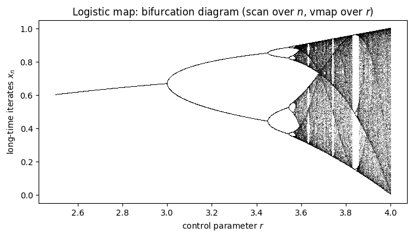
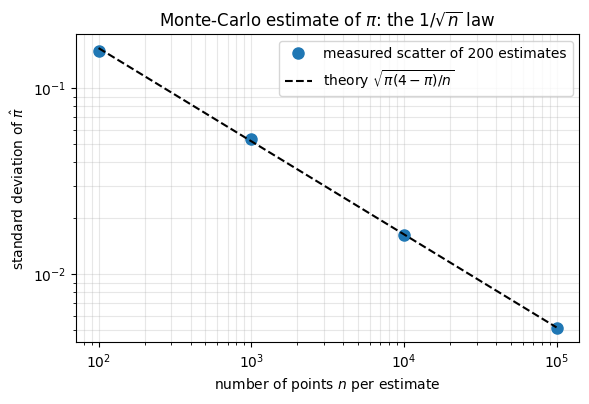
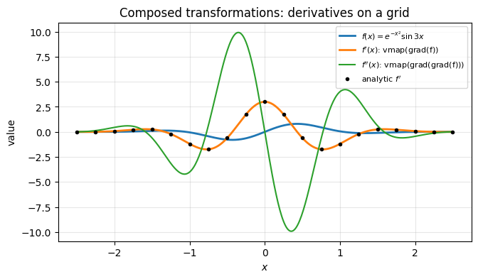
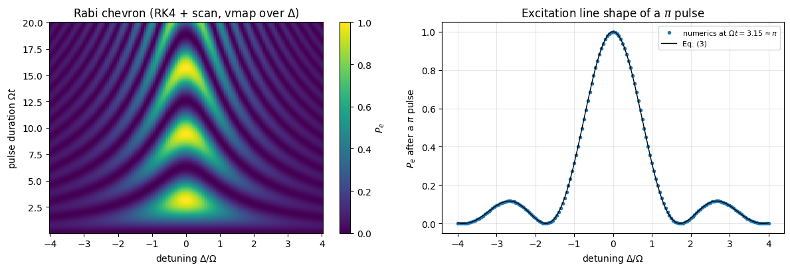
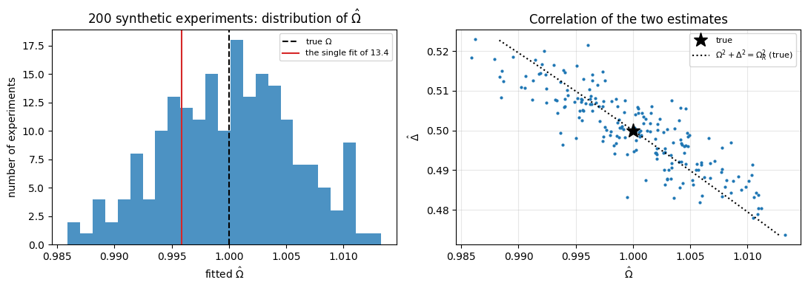

The main computational tool of the course is the JAX library (Bradbury et al., 2018). The two starter notebooks 00a — a free Gaussian wave packet and 00b — the 1D harmonic oscillator used jnp, jit and lax.scan without explaining them; this notebook explains them. Later notebooks simulate chains of interacting quantum spins, noisy quantum circuits, quantum sensors and variational algorithms. The state of \(N\) spins is a list of \(2^N\) complex numbers, so every such simulation is a very large amount of simple arithmetic on arrays, and whether it takes a second or an hour is decided by how that arithmetic is organised.
You already know NumPy: arrays, slicing, np.sin, np.linalg.eigh, and the golden rule “avoid Python loops, use whole-array operations”. JAX is a Python library that keeps this programming model — its module jax.numpy copies the NumPy interface almost function by function — and adds three things:
ingredient
what it is
what you gain
jax.numpy
the NumPy interface, re-implemented on top of a compiler
the same code runs on CPU, GPU or TPU
XLA compiler (jax.jit)
your Python function is traced once and translated into one optimised machine program
speed: fused loops, no temporaries, no Python overhead
function transformations
functions that take a function and return a new function: jit, vmap, grad, (and the loop primitive lax.scan)
batching over parameters without rewriting code; exact derivatives without deriving them by hand
Why should a physicist care? Four recurring situations of this course:
Time evolution is a loop of thousands of identical steps → lax.scan compiles the step once and runs the loop inside the compiled program.
Parameter sweeps, disorder realisations, measurement shots, quantum trajectories are the same computation repeated for many inputs → jax.vmap turns a function written for one sample into a function for a whole batch.
Variational methods and fits need gradients of a simulated quantity with respect to parameters → jax.grad differentiates straight through the simulation.
Stochastic simulations must be reproducible → JAX has explicit random-number keys instead of a hidden global state.
The price is a small set of rules (pure functions, immutable arrays, no Python if on computed values inside compiled code, …). Newcomers hit the same five or six error messages in their first week. We will provoke each of them on purpose, read the message, and learn the idiom that avoids it.
Road map. Section 2 explains the Configuration cell that opens every notebook of the course (device, precision). Sections 3–4 compare jnp with np (immutability, dtypes, complex numbers) and show how to time JAX code (compile time versus run time). Sections 5–8 introduce the transformations one by one: jit, vmap, lax.scan, lax.cond/jnp.where. Section 9 is automatic differentiation, Section 10 random numbers, Sections 11–12 pytrees and the composition of transformations. Section 13 is a mini-project with real physics: a two-level atom driven by a laser (Rabi oscillations), integrated with scan, swept over the detuning with vmap, and finally fitted to noisy synthetic data with grad — differentiating through the ODE solver. Section 14 collects a “NumPy habit → JAX idiom” table and the list of common error messages, to which you will return often.
What you will learn
Physics
the two-level atom in a near-resonant field: Rabi formula, generalised Rabi frequency, the “chevron” pattern measured in every qubit laboratory;
a first variational calculation: the ground state of a single spin found by gradient descent.
Numerical methods
floating-point precision (float32 vs float64), round-off versus truncation error in finite differences;
explicit ODE integrators (Euler, 4th-order Runge–Kutta), measuring the order of convergence;
Monte-Carlo estimates and the \(1/\sqrt{M}\) law; least-squares fitting by gradient descent.
Implementation practice
jax.numpy, immutability and .at[].set(), dtypes and the course-wide configuration cell;
asynchronous dispatch and how to time compiled code (compile time vs run time);
jit, vmap, lax.scan, lax.cond, grad/value_and_grad, explicit PRNG keys, pytrees, and their composition;
reading the typical JAX error messages.
Prerequisites
One semester of quantum mechanics (spin-1/2, Pauli matrices, the Schrödinger equation) and basic NumPy/matplotlib. No previous contact with JAX is assumed, and in particular the two starter notebooks 00a and 00b are not a prerequisite: they are physics warm-ups that used JAX without explaining it, and every idiom they borrowed (jnp, .at[].set(), jit, lax.scan, vmap) is derived below. The natural continuation is 02 — index notation and einsum.
Configuration
Every notebook of this course starts with the same cell. Choose where to run (DEVICE) and the floating-point precision (PRECISION): "double" = float64/complex128 (default, recommended for physics), "single" = float32/complex64 (half the memory, faster on consumer GPUs, but watch the round-off). All code below derives its dtypes from RDTYPE/CDTYPE and its check tolerances from TOL, so nothing else needs to change.
Code
# ==============================================================================# CONFIGURATION -- adapt to your hardware, then run the notebook top to bottom# ==============================================================================DEVICE ="auto"# "auto": use a GPU if JAX finds one, else CPU | "cpu" | "gpu"PRECISION ="double"# "double": float64/complex128 | "single": float32/complex64import osif DEVICE =="cpu": os.environ["JAX_PLATFORMS"] ="cpu"# must be set BEFORE jax is importedimport stringfrom functools import partialimport mathimport numpy as npimport jaximport jax.numpy as jnpfrom jax import lax# Precision is configurable: "double" = float64/complex128 (default; needed for long time evolutions and# tight validation), "single" = float32/complex64 (half the memory, faster on consumer GPUs).# In a notebook PRECISION is defined in the Configuration cell; for this module use the env var QE_PRECISION.PRECISION =globals().get("PRECISION", os.environ.get("QE_PRECISION", "double"))jax.config.update("jax_enable_x64", PRECISION =="double")RDTYPE = jnp.float64 if PRECISION =="double"else jnp.float32 # real dtypeCDTYPE = jnp.complex128 if PRECISION =="double"else jnp.complex64 # complex dtype of all states/operatorsTOL =1e-10if PRECISION =="double"else1e-4# tolerance for sanity checks (asserts)_LETTERS = string.ascii_letters # the 52 einsum index labels a-z, A-Zimport timeimport matplotlib.pyplot as pltif DEVICE =="gpu"and jax.default_backend() =="cpu":print("WARNING: DEVICE='gpu' requested but JAX found no GPU -- running on CPU.")print(f"JAX {jax.__version__} | backend: {jax.default_backend()} | devices: {jax.devices()}")print(f"precision: {PRECISION} -> real {RDTYPE.__name__}, complex {CDTYPE.__name__}, check tolerance TOL={TOL:g}")
JAX 0.11.0 | backend: cpu | devices: [CpuDevice(id=0)]
precision: double -> real float64, complex complex128, check tolerance TOL=1e-10
2. The Configuration cell
The cell above opens every notebook of this course. Its lines, one by one:
DEVICE = "auto" — where the arithmetic is executed. JAX can run the same program on a CPU or on an accelerator (GPU/TPU). With "auto" JAX uses a GPU if it finds one and the CPU otherwise. With "cpu" the cell sets the environment variable JAX_PLATFORMS=cpu. The comment “must be set BEFORE jax is imported” is essential: JAX decides which hardware back-end to initialise when it starts up, so changing the variable later has no effect (after changing DEVICE, restart the kernel). "gpu" only adds a warning if no GPU was found.
PRECISION = "double" — the floating-point format. A float64 (“double precision”) number has about 16 significant decimal digits, a float32 (“single”) only about 7. JAX, unlike NumPy, uses 32-bit numbers by default (it was born in machine learning, where 7 digits are plenty and GPUs are fastest in single precision). The line
switches 64-bit support on. It must be executed before the first array is created, which is why it lives in the first cell. In physics we usually want double precision: we subtract nearly equal energies, we propagate a state over thousands of time steps, and we validate codes by checking that two results agree to \(10^{-10}\).
PRECISION = globals().get("PRECISION", ...) — this odd-looking line simply keeps the value you chose at the top of the cell (globals() is the dictionary of the variables defined in the notebook). The fall-back to an environment variable matters only when the same lines are executed outside a notebook; you can ignore it.
RDTYPE, CDTYPE — the real and the complex data type that match the chosen precision (float64/complex128 or float32/complex64). Rule of the course: never hard-code a dtype; write jnp.zeros(n, dtype=CDTYPE) and the whole notebook follows the switch.
TOL — the tolerance used in the sanity checks (assert error < TOL): \(10^{-10}\) in double and \(10^{-4}\) in single precision. A check that demands \(10^{-10}\) can never pass with 7-digit arithmetic.
_LETTERS — the alphabet a…zA…Z, used from notebook 02 on to build einsum index strings. Not needed today.
The imports.numpy as np (we keep using NumPy for small set-up work and as a reference), jax, jax.numpy as jnp (the convention used by everybody), lax (the low-level module containing scan, cond, …), partial from functools (to pre-fill arguments of a function), the standard modules os, string, math and time, and matplotlib.
The two print lines document the run: JAX version, back-end, devices, precision. When you report a timing or a bug, this line is the first thing people will ask for.
Let us verify what the cell has done.
Code
# ==============================================================================# What did the configuration cell do? Ask JAX directly.# ==============================================================================print("64-bit mode enabled :", jax.config.jax_enable_x64)print("default real dtype :", jnp.ones(3).dtype) # follows the x64 switchprint("default complex dtype :", (1j* jnp.ones(3)).dtype)print("RDTYPE, CDTYPE :", RDTYPE.__name__, CDTYPE.__name__)print("machine epsilon (RDTYPE):", jnp.finfo(RDTYPE).eps) # smallest e with 1+e != 1 (roughly)print("default device :", jnp.ones(3).device)
With PRECISION = "double" a freshly created array is float64, exactly as in NumPy, and the machine epsilon is \(2.2\times10^{-16}\).
What happens without the switch
You will meet JAX code without our configuration cell, so you should see the default behaviour once. The context manager jax.enable_x64(False) switches 64-bit support off for the duration of a with block (we use it only for this demonstration). Two things to watch: the default dtype becomes float32, and an explicit request for float64 is silently downgraded — JAX only emits a warning, which we capture and print.
Code
# ==============================================================================# JAX defaults (no x64): float32 everywhere, float64 requests are truncated# ==============================================================================import warningswith jax.enable_x64(False): a = jnp.arange(3.0)print("default dtype without x64 :", a.dtype)with warnings.catch_warnings(record=True) as caught: warnings.simplefilter("always") b = jnp.zeros(3, dtype=jnp.float64) # we ASK for float64 ...print("requested float64, got :", b.dtype) # ... and get float32print("the warning JAX emits :", str(caught[0].message)[:118], "...")
default dtype without x64 : float32
requested float64, got : float32
the warning JAX emits : Explicitly requested dtype float64 requested in zeros is not available, and will be truncated to dtype float32. To ena ...
Why precision matters: two one-line experiments
Absorption: adding a small number to a big one. In single precision \(1 + 10^{-8}\)is\(1\).
Catastrophic cancellation: \(g(x) = (1-\cos x)/x^2 \to 1/2\) for \(x\to0\). The numerator subtracts two nearly equal numbers; the leading digits cancel and only round-off noise survives. At \(x=10^{-4}\) we have \(1-\cos x \approx 5\times10^{-9}\), below the resolution of float32 — the result is \(0\) instead of \(0.5\).
Both effects, and floating-point arithmetic in general, are explained in D. Goldberg, ACM Comput. Surv. 23, 5 (1991).
We force the dtypes explicitly, and switch 64-bit support on locally with the same context manager, so that the cell shows the same comparison whatever PRECISION you selected.
Code
# ==============================================================================# float32 vs float64: absorption and catastrophic cancellation# ==============================================================================with jax.enable_x64(True): # make float64 available here whatever PRECISION isfor dtype in (jnp.float32, jnp.float64): one, tiny, x = dtype(1.0), dtype(1e-8), dtype(1e-4) g = (one - jnp.cos(x)) / x**2print(f"{jnp.dtype(dtype).name}: (1 + 1e-8) - 1 = {float((one + tiny) - one):.3e} "f"(1 - cos x)/x^2 at x=1e-4 = {float(g):.6f}")
float32: (1 + 1e-8) - 1 = 0.000e+00 (1 - cos x)/x^2 at x=1e-4 = 0.000000
float64: (1 + 1e-8) - 1 = 1.000e-08 (1 - cos x)/x^2 at x=1e-4 = 0.500000
float32 returns \(0\) in both cases; float64 returns \(10^{-8}\) (up to its own 16-digit round-off) and \(0.500000\). The errors of single precision are not always this dramatic, and in return it needs half the memory — a serious argument when a state vector of 30 spins occupies 16 GB in complex128. That is why the switch exists. Our default is "double".
Numerical practice. Decide the precision once, at the top, and derive everything from it (RDTYPE, CDTYPE, TOL). Mixed precision that appears by accident — one array created as float32, the rest float64 — is a classic source of results that are “almost right”.
3. jnp versus np: the same interface, a different kind of array
3.1 First contact
Almost every NumPy function exists under the same name in jax.numpy. If you can write NumPy you can already write JAX:
Code
# ==============================================================================# The same computation in NumPy and in jax.numpy# ==============================================================================x_np = np.linspace(0.0, 1.0, 5)x = jnp.linspace(0.0, 1.0, 5)print("NumPy :", np.sum(np.sin(x_np) **2), type(x_np).__name__)print("JAX :", jnp.sum(jnp.sin(x) **2), type(x).__name__)print("x :", x, "| dtype", x.dtype, "| shape", x.shape, "| lives on", x.device)# conversions in both directions (on CPU they are cheap; on a GPU they copy data between memories)back = np.asarray(x) # jax.Array -> numpy.ndarrayforth = jnp.asarray(x_np) # numpy.ndarray -> jax.Arrayprint("round trip:", type(back).__name__, "->", type(forth).__name__, "| as Python float:", float(x[1]))# linear algebra is there too: eigenvalues of the Pauli matrix sigma_xsigma_x = jnp.array([[0, 1], [1, 0]], dtype=CDTYPE)print("eigenvalues of sigma_x:", jnp.linalg.eigvalsh(sigma_x))
The results agree; the type of the array differs: a jax.Array (its class is called ArrayImpl) knows on which device it lives and can be handed to the compiler. matplotlib, float(), np.asarray all accept it.
3.2 Difference no. 1 — JAX arrays are immutable
In NumPy you modify arrays in place: x[0] = 5. JAX forbids this. The reason is the compiler: a function that only computes outputs from inputs and never modifies anything (a pure function) can be analysed, reordered, fused, differentiated and batched safely. In-place modification of shared data would break all of that.
The following helper runs a piece of code that we expect to fail and prints the first lines of the error message instead of stopping the notebook. We will use it throughout to get acquainted with JAX’s error messages.
Code
# ==============================================================================# Helper: provoke an error on purpose and read the message# ==============================================================================import redef show_error(fn, *args, max_lines=1):"""Call fn(*args); if it raises, print the exception type and the first `max_lines` lines of its message."""try: fn(*args)print("no error raised")exceptExceptionas err: # noqa: BLE001 (we WANT to catch everything here) lines = [re.sub(r" at \S+:\d+", "", ln) for ln instr(err).strip().splitlines()] # drop file pathsprint(f"{type(err).__name__}: "+"\n ".join(lines[:max_lines]))def assign_in_place(arr): arr[0] =5.0# the NumPy habitshow_error(assign_in_place, jnp.zeros(4))
TypeError: JAX arrays are immutable and do not support in-place item assignment. Instead of x[idx] = y, use x = x.at[idx].set(y) or another .at[] method: https://docs.jax.dev/en/latest/_autosummary/jax.numpy.ndarray.at.html
The message already tells us the cure. x.at[idx] is an indexed update helper: .set(v), .add(v), .multiply(v), .min(v), .max(v) return a new array and leave the original untouched.
Code
# ==============================================================================# Functional updates: x_new = x.at[index].set(value)# ==============================================================================x = jnp.zeros(4, dtype=RDTYPE)y = x.at[0].set(5.0) # like x[0] = 5, but returns a copyz = y.at[1:3].add(1.0) # like y[1:3] += 1print("x (unchanged):", x)print("y :", y)print("z :", z)# the quantum state |0> of a spin-1/2: a complex vector with a single 1 -- built the functional wayket0 = jnp.zeros(2, dtype=CDTYPE).at[0].set(1.0)print("|0> =", ket0)
x (unchanged): [0. 0. 0. 0.]
y : [5. 0. 0. 0.]
z : [5. 1. 1. 0.]
|0> = [1.+0.j 0.+0.j]
A copy for every update sounds expensive. Outside compiled code it is, a little. Inside a jit-compiled function the compiler sees that the old array is never used again and performs the update in place. You get the safety of functional code and the speed of mutation.
3.3 Difference no. 2 — silent out-of-bounds indexing, and no implicit lists
Code running on an accelerator cannot raise a Python exception in the middle of a computation. JAX therefore defines a behaviour for out-of-range indices instead of raising an error: when reading, the index is clamped to the valid range; when updating with .at[], the update is dropped.
Code
# ==============================================================================# Out-of-bounds indices do NOT raise in JAX# ==============================================================================v_np = np.arange(5.0)v = jnp.arange(5.0)show_error(lambda: v_np[10]) # NumPy: IndexErrorprint("JAX v[10] =", v[10], " <- clamped to the last element, no error")print("JAX v.at[10].set(99.) =", v.at[10].set(99.0), " <- update silently dropped")# JAX functions also refuse Python lists (NumPy converts them silently, which hides performance problems)show_error(lambda: jnp.sum([1.0, 2.0, 3.0]))print("explicit conversion works:", jnp.sum(jnp.array([1.0, 2.0, 3.0])))
IndexError: index 10 is out of bounds for axis 0 with size 5
JAX v[10] = 4.0 <- clamped to the last element, no error
JAX v.at[10].set(99.) = [0. 1. 2. 3. 4.] <- update silently dropped
TypeError: sum requires ndarray or scalar arguments, got <class 'list'> at position 0.
explicit conversion works: 6.0
Common pitfall. An off-by-one index in NumPy crashes loudly; in JAX it returns a wrong number quietly. When you translate a loop with index arithmetic to JAX, test it against a NumPy version on a small example.
3.4 Complex numbers
Quantum mechanics lives in complex vector spaces, and JAX handles complex arrays natively. The only thing to remember is the dtype: an array created from Python integers is an integer array, and storing a complex number into a real array does not make it complex. We therefore always create states and operators with dtype=CDTYPE.
As a warm-up with physical content, take the spin state \(|\psi\rangle = (|0\rangle + i|1\rangle)/\sqrt2\). It is the eigenstate of \(\sigma_y\) with eigenvalue \(+1\), so we must find \(\langle\psi|\psi\rangle = 1\) and \(\langle\psi|\sigma_y|\psi\rangle = 1\). The function jnp.vdot(a, b)\(=\sum_i a_i^* b_i\) complex-conjugates its first argument — it is the bra-ket \(\langle a|b\rangle\) — whereas jnp.dot does not conjugate.
Code
# ==============================================================================# Complex arrays: a spin-1/2 state, its norm and an expectation value# ==============================================================================sigma_y = jnp.array([[0, -1j], [1j, 0]], dtype=CDTYPE)psi = jnp.array([1.0, 1.0j], dtype=CDTYPE) / jnp.sqrt(2.0)norm2 = jnp.vdot(psi, psi) # <psi|psi> (vdot conjugates the first argument)exp_y = jnp.vdot(psi, sigma_y @ psi) # <psi|sigma_y|psi>wrong = jnp.dot(psi, psi) # NO conjugation: sum_i psi_i^2 = (1 + i^2)/2 = 0print("dtype of psi :", psi.dtype)print("<psi|psi> :", norm2)print("<psi|sigma_y|psi> :", exp_y)print("jnp.dot(psi, psi) :", wrong, " <- not a norm")# CHECKPOINT: normalisation and eigenvalue +1assertabs(norm2 -1) < TOL andabs(exp_y -1) < TOLprint("checkpoint passed: |<psi|psi> - 1| and |<sigma_y> - 1| are below TOL =", TOL)
dtype of psi : complex128
<psi|psi> : (0.9999999999999998+0j)
<psi|sigma_y|psi> : (0.9999999999999998+0j)
jnp.dot(psi, psi) : 0j <- not a norm
checkpoint passed: |<psi|psi> - 1| and |<sigma_y> - 1| are below TOL = 1e-10
Both numbers are \(1\) to machine precision, while the un-conjugated dot product gives \(0\) — a reminder that in a complex vector space the inner product needs the complex conjugate.
4. Asynchronous dispatch and timing
When you call a JAX operation, Python does not wait for the result. JAX puts the operation into a queue for the device and returns immediately with a “promise” (an array whose numbers are still being computed). Python can then go on and enqueue the next operation while the device is busy. This asynchronous dispatch keeps a GPU fed with work, but it has a consequence for benchmarking:
If you wrap a JAX call between two time.perf_counter() calls, you may measure only the time needed to enqueue the work — microseconds — and not the computation.
The cure is to wait explicitly: result.block_until_ready(), or jax.block_until_ready(anything) for nested containers of arrays. (Printing a value or converting it with float()/np.asarray also waits — the number must exist to be printed.) Let us measure a \(1500\times1500\) matrix product both ways.
Code
# ==============================================================================# Timing a matrix product: dispatch time vs time until the result is ready# ==============================================================================key = jax.random.PRNGKey(0) # random numbers: explained in Section 10A = jax.random.normal(key, (1500, 1500), dtype=RDTYPE)(A @ A).block_until_ready() # warm-up (first call may include set-up work)t0 = time.perf_counter()B = A @ A # returns immediately ...t_dispatch = time.perf_counter() - t0B.block_until_ready() # ... the numbers are ready only nowt_total = time.perf_counter() - t0print(f"time until Python got control back : {1e3* t_dispatch:8.3f} ms (dispatch only -- NOT the cost of A @ A)")print(f"time until the result was ready : {1e3* t_total:8.3f} ms (the measured compute time)")
time until Python got control back : 0.328 ms (dispatch only -- NOT the cost of A @ A)
time until the result was ready : 30.309 ms (the measured compute time)
The first number is a small fraction of the second: a careless benchmark would have “shown” that the product of two \(1500\times1500\) matrices costs a fraction of what it really costs. Both numbers depend on the machine and on how busy it was while this notebook was executed — what matters is that they differ by a large factor.
We now write the small benchmarking helper used in the rest of this notebook. It embodies three rules: (i) one un-timed warm-up call, because the first call of a compiled function includes the compilation (Section 5); (ii) always block until the result is ready; (iii) repeat and report the best time, the least disturbed by whatever else the computer is doing.
Numerical practice. Absolute timings in this notebook depend on the machine that executed it, and on how busy it was. Trust the ratios and the scaling, and re-run the cells on your own computer.
Code
# ==============================================================================# bench(): wall-clock timing after a warm-up call, with block_until_ready# ==============================================================================def bench(fn, *args, repeats=5):"""Best-of-`repeats` wall time (seconds) of fn(*args). IMPLEMENTATION * one warm-up call that is NOT timed (it triggers compilation for jitted functions); * jax.block_until_ready waits for every array in the result (it ignores non-JAX values such as NumPy arrays or floats, so the same helper can time NumPy code); * minimum over repeats = the run least disturbed by other processes. """ jax.block_until_ready(fn(*args)) best =float("inf")for _ inrange(repeats): t0 = time.perf_counter() jax.block_until_ready(fn(*args)) best =min(best, time.perf_counter() - t0)return bestprint(f"A @ A, best-of-5: {1e3* bench(lambda M: M @ M, A):.1f} ms")
A @ A, best-of-5: 27.9 ms
5. jax.jit — compile a Python function into one fused program
5.1 What happens without a compiler
Consider \(f(x)=\sum_i e^{-x_i^2}\,\sin^2(3x_i)/(1+x_i^2)\) for an array with two million entries. NumPy (and JAX without jit, the so-called eager mode) executes the expression operation by operation: it computes x**2 for all entries and stores the result in a temporary array, then -(...), then exp(...), … about ten passes over ten temporary arrays of 16 MB each. The arithmetic is trivial; the time goes into moving memory.
jax.jit(f) returns a new function with the same signature. On its first call JAX tracesf: it runs the Python code once with abstract placeholder arrays (tracers) that record which operations are applied, producing a small program in an intermediate language (the jaxpr). The XLA compiler optimises this program — here it fuses all element-wise operations into a single loop without temporaries — and generates machine code. Subsequent calls skip Python entirely and run the compiled program.
Code
# ==============================================================================# NumPy vs eager JAX vs jit-compiled JAX# ==============================================================================def f_numpy(x):return np.sum(np.exp(-x**2) * np.sin(3* x) **2/ (1+ x**2))def f_jax(x):"""f(x) = sum_i exp(-x_i^2) sin^2(3 x_i) / (1 + x_i^2) -- identical code, np -> jnp."""return jnp.sum(jnp.exp(-x**2) * jnp.sin(3* x) **2/ (1+ x**2))f_jit = jax.jit(f_jax) # jit: function in -> compiled function outx_np = np.linspace(-3.0, 3.0, 2_000_000).astype(RDTYPE)x = jnp.asarray(x_np)# the FIRST call of a jitted function = tracing + compilation + executiont0 = time.perf_counter()first = f_jit(x).block_until_ready()t_first = time.perf_counter() - t0t_np, t_eager, t_jit = bench(f_numpy, x_np), bench(f_jax, x), bench(f_jit, x)print(f"values: numpy {f_numpy(x_np):.10f} | jax {float(f_jit(x)):.10f}")print(f"NumPy : {1e3* t_np:8.2f} ms")print(f"JAX eager (no jit) : {1e3* t_eager:8.2f} ms")print(f"JAX jit, first call : {1e3* t_first:8.2f} ms <- includes tracing + compilation")print(f"JAX jit, later calls : {1e3* t_jit:8.2f} ms -> {t_np / t_jit:.1f}x faster than NumPy")# CHECKPOINT: same number from both librariesassertabs(f_numpy(x_np) -float(f_jit(x))) < (1e-6if PRECISION =="double"else1.0)
values: numpy 220357.8270194129 | jax 220357.8270194130
NumPy : 30.29 ms
JAX eager (no jit) : 18.90 ms
JAX jit, first call : 42.05 ms <- includes tracing + compilation
JAX jit, later calls : 8.08 ms -> 3.7x faster than NumPy
Three lessons. (i) NumPy and JAX agree on the value. (ii) The first call of the compiled function is much slower than the later ones, because it contains the compilation: always separate compile time from run time when you benchmark. (iii) After compilation the fused program beats NumPy, by the factor printed in the last line, without any change to the mathematics. The factor depends on the machine and on its load.
For small arrays the comparison changes character. Nothing is memory-bound any more; what dominates is the fixed cost of dispatching each operation to the device (microseconds). Eager JAX is then the clear loser, because it pays that cost once per operation, whereas jit pays it once for the whole function — so jit buys you more there, often an order of magnitude. Against NumPy, however, jitted JAX is on small arrays only comparable: NumPy has almost no dispatch overhead. On small problems JAX earns its keep elsewhere — through vmap (Section 6), lax.scan (Section 7), grad (Section 9) and the accelerator.
5.2 Looking at the trace
jax.make_jaxpr shows the recorded program. We use a shorter function to keep it readable. (The design of this trace-and-compile pipeline is described by Frostig, Johnson and Leary, SysML 2018.)
Code
# ==============================================================================# The jaxpr: what the tracer recorded# ==============================================================================def lorentzian(x, gamma):"""L(x) = gamma^2 / (x^2 + gamma^2)."""return gamma**2/ (x**2+ gamma**2)jaxpr = jax.make_jaxpr(lorentzian)(jnp.ones(4, dtype=RDTYPE), 0.5)print(jaxpr.pretty_print(use_color=False))
{ lambda ; a:f64[4] b:f64[]. let
c:f64[] = integer_pow[y=2] b
d:f64[4] = integer_pow[y=2] a
e:f64[] = integer_pow[y=2] b
f:f64[] = convert_element_type[new_dtype=float64 weak_type=False] e
g:f64[4] = add d f
h:f64[] = convert_element_type[new_dtype=float64 weak_type=False] c
i:f64[4] = div h g
in (i,) }
Read it as a tiny program: the inputs a (an array of 4 floats) and b (a scalar), then one line per primitive operation (integer_pow, add, div, …; convert_element_type is dtype book-keeping), and the returned variable. Notice what is absent: the numerical values. The trace knows only the shape and dtype of each argument. This single fact explains all the rules that follow.
5.3 Tracing happens once per input type — side effects happen only while tracing
A print inside a jitted function is executed when Python runs the function body, i.e. during tracing, and never again. What it shows is the tracer, not a number. For printing actual values at run time there is jax.debug.print.
Code
# ==============================================================================# print() fires at TRACE time only; jax.debug.print fires at RUN time# ==============================================================================@jax.jitdef noisy_square(x):print(" [python print] tracing with x =", x) # side effect: executed only while tracing jax.debug.print(" [debug.print] running with x = {}", x) # becomes part of the compiled programreturn x**2print("call 1 (float scalar):")_ = noisy_square(jnp.asarray(2.0, dtype=RDTYPE)).block_until_ready()print("call 2 (same type -> cached, no tracing):")_ = noisy_square(jnp.asarray(3.0, dtype=RDTYPE)).block_until_ready()print("call 3 (new SHAPE -> traced and compiled again):")_ = noisy_square(jnp.ones(2, dtype=RDTYPE)).block_until_ready()
call 1 (float scalar):
[python print] tracing with x = JitTracer(float64[])
[debug.print] running with x = 2.0
call 2 (same type -> cached, no tracing):
[debug.print] running with x = 3.0
call 3 (new SHAPE -> traced and compiled again):
[python print] tracing with x = JitTracer(float64[2])
[debug.print] running with x = [1. 1.]
Call 1 shows both messages, and the Python print displays a JitTracer object of type “float scalar” — not the number 2. Call 2 re-uses the cached program: only the run-time print appears. Call 3 has a new input shape, so JAX traces and compiles a second version.
JAX practice. A jitted function is recompiled for every new combination of input shapes and dtypes. Calling it in a loop with arrays of ever-changing length means compiling in every iteration — a common reason for “JAX is slow”. Keep shapes fixed (pad if necessary).
The same mechanism makes impure functions dangerous. A global variable read inside a jitted function is baked into the program as a constant at trace time:
Code
# ==============================================================================# Pitfall: a global variable is frozen into the compiled program# ==============================================================================scale =2.0@jax.jitdef times_scale(x):return scale * x # `scale` is NOT an argument: its current value becomes a constantprint("scale = 2 ->", times_scale(1.0))scale =100.0# change the global ...print("scale = 100 ->", times_scale(1.0), " <- still the old value: the cached program is reused")
scale = 2 -> 2.0
scale = 100 -> 2.0 <- still the old value: the cached program is reused
The cure is the rule we will follow in the whole course: pure functions — everything a function needs comes in through its arguments, everything it produces goes out through its return value.
One practical exception, used below and in every later notebook: numbers fixed once in a clearly marked PARAMETERS cell and never touched again (OMEGA, N_GD, LEARNING_RATE, …) may be read from the enclosing scope. They really are constants, and freezing a constant into the compiled program is exactly what we want. What must never be a global is a value you intend to change: change it and the cached program will quietly ignore you, as it just did. If in doubt, make it an argument.
5.4 Python control flow on traced values
Because a tracer has no value, Python cannot evaluate if x > 0: during tracing:
Code
# ==============================================================================# A common JAX error: Python `if` on a traced value# ==============================================================================@jax.jitdef relu_with_if(x):if x >0: # needs the VALUE of x -> impossible while tracingreturn xreturn0.0* xshow_error(relu_with_if, 1.0, max_lines=2)@jax.jitdef relu_with_where(x):return jnp.where(x >0, x, 0.0) # element-wise selection: both options are computed, one is keptprint("fixed with jnp.where:", relu_with_where(1.5), relu_with_where(-1.5))
TracerBoolConversionError: Attempted boolean conversion of traced array with shape bool[].
The error occurred while tracing the function relu_with_if for jit. This concrete value was not available in Python because it depends on the value of the argument x.
fixed with jnp.where: 1.5 0.0
TracerBoolConversionError means: you asked Python to make a decision that depends on a number which will only exist at run time. The fixes, in order of preference: jnp.where (for cheap element-wise alternatives), lax.cond (Section 8), or — if the quantity is really a fixed setting and not data — declare it static.
5.5 Static arguments
Some arguments are not numerical data but structure: the number of terms in a sum, the number of spins, an option flag. They determine shapes or the number of loop iterations, so they must be known at trace time. Below, the truncated geometric series \(\sum_{k=0}^{n-1} x^k\) uses range(n), which needs a Python integer.
Code
# ==============================================================================# Static arguments: values that define the STRUCTURE of the computation# ==============================================================================def geometric_sum(x, n):"""sum_{k=0}^{n-1} x^k with a Python loop over k (n must be a concrete Python int).""" total = jnp.zeros_like(x)for k inrange(n): # range() needs a real integer, not a tracer total = total + x**kreturn totalshow_error(jax.jit(geometric_sum), 0.5, 10) # n is traced -> errorgeometric_sum_jit = jax.jit(geometric_sum, static_argnums=1) # argument no. 1 (n) is staticval = geometric_sum_jit(jnp.asarray(0.5, dtype=RDTYPE), 10)exact = (1-0.5**10) / (1-0.5) # closed form (1 - x^n)/(1 - x)print(f"sum_(k<10) 0.5^k = {float(val):.12f} closed form {exact:.12f}")assertabs(float(val) - exact) < TOL
TracerIntegerConversionError: The __index__() method was called on traced array with shape int64[]
sum_(k<10) 0.5^k = 1.998046875000 closed form 1.998046875000
The first attempt fails with a TracerIntegerConversionError: range(n) asked the tracer for an integer value (Python’s __index__() method), and a tracer has none. With static_argnums=1 (or static_argnames="n") JAX treats n as part of the function’s identity: the value is visible to Python during tracing, and each new value of n triggers a new compilation. Static arguments must be hashable (ints, strings, tuples — not arrays).
Common pitfall. Do not make a continuously varying parameter (a coupling constant, a time step you scan over) static “to make the error go away”: you would recompile for every value. Static = structure, traced = numbers. In this course the number of spins, the list of spin indices a gate acts on, and the number of time steps are static; angles, couplings, times and states are traced.
Notice also what the Python for loop did under jit: the tracer simply ran it, recording n copies of the loop body one after another. The loop was unrolled. For ten iterations this is fine; for the ten thousand steps of a time evolution it produces a gigantic program that takes forever to compile. The remedy is lax.scan (Section 7).
6. jax.vmap — from a single-sample function to a batched one
NumPy’s golden rule (“no Python loops, vectorise”) forces you to write every function twice in your head: once for the mathematics, and once more with an extra leading “batch” axis threaded through every operation. jax.vmap(f) does the second step automatically: given f for one input it returns a function that accepts a stack of inputs and computes all results at once, by rewriting each operation into its batched version rather than by looping (a matrix–vector product becomes a matrix–matrix product, and so on).
6.1 One spin, many states
The expectation value of an observable \(O\) in a state \(|\psi\rangle\) is \(\langle O\rangle = \langle\psi|O|\psi\rangle\). For one state this is one line. Suppose we have \(10^4\) states stored as the rows of an array of shape (10000, 2).
Code
# ==============================================================================# expectation(): written for ONE state# ==============================================================================def expectation(psi, O):"""<psi|O|psi> for a single state vector psi (shape (d,)) and a Hermitian matrix O (shape (d,d)). MATH <O> = sum_{ij} psi_i^* O_ij psi_j (real for Hermitian O). """return jnp.real(jnp.vdot(psi, O @ psi))sigma_z = jnp.array([[1, 0], [0, -1]], dtype=CDTYPE)# a batch of random normalised spin-1/2 states, shape (M, 2)M =10_000k1, k2 = jax.random.split(jax.random.PRNGKey(1))states = (jax.random.normal(k1, (M, 2), dtype=RDTYPE) +1j* jax.random.normal(k2, (M, 2), dtype=RDTYPE)).astype(CDTYPE)states = states / jnp.linalg.norm(states, axis=1, keepdims=True)# in_axes: which axis of each argument is the batch axis? psi -> axis 0, O -> None (shared, not batched)expectation_batch = jax.vmap(expectation, in_axes=(0, None))z_loop = jnp.stack([expectation(s, sigma_z) for s in states[:200]]) # Python loop (first 200 states only)z_vmap = expectation_batch(states, sigma_z) # all 10000 at oncez_einsum = jnp.real(jnp.einsum("bi,ij,bj->b", states.conj(), sigma_z, states)) # hand-vectorised referenceprint("output shape:", z_vmap.shape)print("max |vmap - loop| =", float(jnp.max(jnp.abs(z_vmap[:200] - z_loop))))print("max |vmap - einsum| =", float(jnp.max(jnp.abs(z_vmap - z_einsum))))assert jnp.max(jnp.abs(z_vmap - z_einsum)) < TOL
output shape: (10000,)
max |vmap - loop| = 0.0
max |vmap - einsum| = 1.1102230246251565e-16
Code
# ==============================================================================# Timing: Python loop vs vmap vs jit(vmap)# ==============================================================================def loop_version(states, O):return jnp.stack([expectation(s, O) for s in states])t_loop = bench(loop_version, states[:1000], sigma_z, repeats=2) * (M /1000) # time 1000, extrapolate to 10000t_vmap = bench(expectation_batch, states, sigma_z)t_jv = bench(jax.jit(expectation_batch), states, sigma_z)print(f"Python loop over {M} states (extrapolated from 1000): {1e3* t_loop:9.1f} ms")print(f"vmap : {1e3* t_vmap:9.2f} ms")print(f"jit(vmap) : {1e3* t_jv:9.3f} ms -> {t_loop / t_jv:,.0f}x faster than the (extrapolated) loop")
Python loop over 10000 states (extrapolated from 1000): 343.2 ms
vmap : 0.44 ms
jit(vmap) : 0.082 ms -> 4,177x faster than the (extrapolated) loop
vmap reproduces the loop and the hand-written einsum to round-off, and is faster than the Python loop by several orders of magnitude: the loop pays the Python and dispatch overhead ten thousand times, the batched version once. (einsum, used here as the hand-vectorised reference, is the subject of the next notebook.)
The argument in_axes=(0, None) reads: “the first argument carries the batch along its axis 0; the second argument is the same for all samples”. The result carries the batch along axis 0 (changeable with out_axes). If the batch sizes of two batched arguments disagree, JAX says so clearly:
ValueError: vmap got inconsistent sizes for array axes to be mapped:
* one axis had size 3: axis 0 of argument psi of type complex128[3,2];
* one axis had size 4: axis 0 of argument O of type complex128[4,2,2]
6.2 Nested vmap: a table of values over a two-parameter grid
A general spin-1/2 state is a point on the Bloch sphere with polar angle \(\theta\) and azimuth \(\varphi\),
and a short calculation gives \(\langle\sigma_x\rangle = 2\,\mathrm{Re}\big(\cos\tfrac\theta2\, e^{i\varphi} \sin\tfrac\theta2\big) = \sin\theta\cos\varphi\) — the \(x\) coordinate of the point. We write the function for one pair \((\theta,\varphi)\) and apply vmap twice: the inner one runs over \(\varphi\) (argument 1), the outer one over \(\theta\) (argument 0). The result is a 2D table, obtained without meshgrid or explicit broadcasting.
table shape: (50, 80) | max deviation from sin(theta)cos(phi): 2.220446049250313e-16
The table has shape (50, 80) = (number of \(\theta\) values, number of \(\varphi\) values), and it agrees with the analytic formula to machine precision.
JAX practice. Write and test the function for a single sample; add vmap afterwards. In later notebooks the “sample” will be a disorder realisation, a measurement shot, a quantum trajectory or a set of circuit parameters — the pattern is always the one above.
7. lax.scan — loops with a carry
Many algorithms are inherently sequential: step \(n+1\) needs the result of step \(n\) (iterating a map, integrating an ODE, evolving a quantum state in time). vmap cannot help here. A Python for loop under jit works but is unrolled (Section 5.5). lax.scan is the loop construct that the compiler understands: the loop body is traced and compiled once and the iteration happens inside the compiled program.
Its semantics are those of this plain-Python function:
def scan(f, init, xs): carry, ys = init, []for x in xs: # xs: array of per-step inputs (or None, with length=n) carry, y = f(carry, x) # f: (carry, x) -> (new_carry, y) ys.append(y)return carry, stack(ys) # final carry and ALL per-step outputs stacked
The carry is whatever must be passed from one step to the next (the current state); y is whatever you want to record at each step (an observable). One rule: the carry must keep exactly the same shape and dtype from step to step.
7.1 Iterating a map: the logistic map
The logistic map \(x_{n+1} = r\,x_n(1-x_n)\) is the textbook example of the period-doubling route to chaos. We iterate it with scan, and — since a parameter sweep is a batch — we vmap the whole iteration over 1200 values of \(r\).
Code
# ==============================================================================# scan: iterate the logistic map; vmap: sweep the parameter r# ==============================================================================def logistic_orbit(r, x0, n_steps):"""Iterate x -> r x (1-x) n_steps times; return the whole orbit (shape (n_steps,)). JAX carry = current x; per-step output y = new x; no per-step input (xs=None, length=n_steps). """def step(x, _): x_new = r * x * (1.0- x)return x_new, x_new # (new carry, recorded output) _, orbit = lax.scan(step, x0, None, length=n_steps)return orbit# single orbit, checked against a plain Python looporbit = logistic_orbit(jnp.asarray(3.2, dtype=RDTYPE), jnp.asarray(0.3, dtype=RDTYPE), 50)x_py, ref =0.3, []for _ inrange(50): x_py =3.2* x_py * (1.0- x_py) ref.append(x_py)err =float(jnp.max(jnp.abs(orbit - jnp.asarray(ref, dtype=RDTYPE))))print("scan vs Python loop, max difference:", err)assert err < (TOL if PRECISION =="double"else1e-3)# parameter sweep: vmap over r, jit the lot. n_steps is structure -> static.rs = jnp.linspace(2.5, 4.0, 1200, dtype=RDTYPE)sweep = jax.jit(jax.vmap(logistic_orbit, in_axes=(0, None, None)), static_argnums=2)t0 = time.perf_counter()orbits = sweep(rs, jnp.asarray(0.3, dtype=RDTYPE), 1000).block_until_ready()print(f"1200 orbits x 1000 steps: {time.perf_counter() - t0:.2f} s including compilation; result shape {orbits.shape}")
scan vs Python loop, max difference: 0.0
1200 orbits x 1000 steps: 0.08 s including compilation; result shape (1200, 1000)
Code
fig, ax = plt.subplots(figsize=(8, 4))tail = np.asarray(orbits[:, -200:]) # discard the transient, keep the last 200 iteratesax.plot(np.repeat(np.asarray(rs), 200), tail.reshape(-1), ",", color="k", alpha=0.35)ax.set_xlabel("control parameter $r$")ax.set_ylabel("long-time iterates $x_n$")ax.set_title("Logistic map: bifurcation diagram (scan over $n$, vmap over $r$)")plt.show()

The familiar bifurcation diagram: a fixed point for \(r<3\), period doubling at \(r=3\) and \(r\approx3.45\), the onset of chaos at \(r\approx3.57\), and periodic windows inside the chaotic region (the large period-3 window near \(r\approx3.83\)). The \(1.2\) million sequential map iterations run as one compiled program, scan inside vmap inside jit; the printed time includes the compilation.
7.2 A simple ODE integrator
An ordinary differential equation \(\dot y = f(y,t)\) is solved numerically by stepping in time. Two classic explicit schemes with step \(\Delta t\):
Euler: \(y_{n+1} = y_n + \Delta t\, f(y_n,t_n)\) — local error \(O(\Delta t^2)\), global error \(O(\Delta t)\).
Runge–Kutta 4 (RK4): four evaluations of \(f\) per step,
constructed so that the Taylor expansion of the exact solution is matched up to \(\Delta t^4\): local error \(O(\Delta t^5)\), global error \(O(\Delta t^4)\) (quoted without proof; see Press et al. in the references).
“Global error \(O(\Delta t^p)\)” means: halving the step reduces the error at a fixed final time by \(2^p\). We implement a generic integrator — the carry is the pair \((y, t)\) — and test it on the harmonic oscillator \(\dot q = p,\ \dot p = -q\) with the exact solution \(q(t)=\cos t\), \(p(t) = -\sin t\) for \(q(0)=1, p(0)=0\).
Code
# ==============================================================================# Generic fixed-step ODE integrator built on lax.scan# ==============================================================================def euler_step(f, y, t, dt):"""One explicit Euler step y + dt f(y,t)."""return y + dt * f(y, t)def rk4_step(f, y, t, dt):"""One classical Runge-Kutta-4 step for dy/dt = f(y, t). MATH y_{n+1} = y_n + dt/6 (k1 + 2 k2 + 2 k3 + k4) with the four slopes k_i defined in the text. COST 4 evaluations of f per step; global error O(dt^4). """ k1 = f(y, t) k2 = f(y +0.5* dt * k1, t +0.5* dt) k3 = f(y +0.5* dt * k2, t +0.5* dt) k4 = f(y + dt * k3, t + dt)return y + dt /6.0* (k1 +2* k2 +2* k3 + k4)def integrate(f, y0, dt, n_steps, stepper=rk4_step):"""Integrate dy/dt = f(y,t) from t=0 with n_steps steps of size dt; return the trajectory (n_steps, ...). JAX lax.scan with carry (y, t). `f`, `n_steps` and `stepper` are static structure; y0 and dt are traced. """def step(carry, _): y, t = carry y_new = stepper(f, y, t, dt)return (y_new, t + dt), y_new t0 = jnp.zeros((), dtype=y0.real.dtype) _, ys = lax.scan(step, (y0, t0), None, length=n_steps)return ysdef oscillator(y, t):"""Harmonic oscillator, y = (q, p): dq/dt = p, dp/dt = -q."""return jnp.array([y[1], -y[0]])y0 = jnp.array([1.0, 0.0], dtype=RDTYPE)T_final =20.0print(" n_steps dt Euler error RK4 error")for n_steps in (200, 400, 800): dt = T_final / n_steps exact = jnp.array([jnp.cos(T_final), -jnp.sin(T_final)]) e_euler = jnp.linalg.norm(integrate(oscillator, y0, dt, n_steps, euler_step)[-1] - exact) e_rk4 = jnp.linalg.norm(integrate(oscillator, y0, dt, n_steps, rk4_step)[-1] - exact)print(f"{n_steps:8d}{dt:6.3f}{float(e_euler):12.3e}{float(e_rk4):12.3e}")
Halving \(\Delta t\) reduces the RK4 error by a factor \(\approx 16=2^4\) (order 4), and the Euler error by a factor between \(2\) and \(3\): Euler is order 1, but at these step sizes it is not yet in its asymptotic regime — its error is of the order of the solution itself. The reason is that Euler systematically pumps energy into the oscillator. One step maps \((q,p)\mapsto(q+\Delta t\,p,\;p-\Delta t\,q)\), and therefore
exactly. After \(n=T/\Delta t\) steps the amplitude is multiplied by \((1+\Delta t^2)^{n/2}\approx e^{T\Delta t/2}\), so the error at the final time is about \((1+\Delta t^2)^{n/2}-1=1.705\), \(0.648\) and \(0.284\) for the three rows of the table. The printed errors are larger by at most \(0.003\), the contribution of Euler’s phase error. Only once \(T\Delta t\ll1\) does \(e^{T\Delta t/2}-1\approx T\Delta t/2\) behave like the \(O(\Delta t)\) the theory promises. We come back to such structural failures of generic integrators — and to the unitary methods that avoid them — in 04 — time evolution the textbook way.
7.3 Compile time of an unrolled Python loop and of scan
Both versions below compute the same number. The Python loop is unrolled into n copies of the body; scan compiles the body once.
Code
# ==============================================================================# Compile time: unrolled Python loop vs lax.scan# ==============================================================================def iterate_unrolled(x, n):for _ inrange(n): # unrolled at trace time: n copies of the body x =3.7* x * (1.0- x)return xdef iterate_scan(x, n):return lax.scan(lambda c, _: (3.7* c * (1.0- c), None), x, None, length=n)[0]x0 = jnp.asarray(0.3, dtype=RDTYPE)print(" n first call, unrolled loop first call, scan same result?")for n in (10, 100, 1000): timings = []for fn in (iterate_unrolled, iterate_scan): compiled = jax.jit(fn, static_argnums=1) # fresh jit -> nothing cached t0 = time.perf_counter() out = compiled(x0, n).block_until_ready() timings.append((time.perf_counter() - t0, float(out))) same = timings[0][1] == timings[1][1] # same operations in the same order -> identical bitsprint(f"{n:6d}{timings[0][0]:18.3f} s {timings[1][0]:16.3f} s {same}")
n first call, unrolled loop first call, scan same result?
10 0.027 s 0.022 s True
100 0.076 s 0.022 s True
1000 0.567 s 0.024 s True
The first-call time of scan does not depend on \(n\). The unrolled program has \(n\) copies of the body, and at \(n=1000\) its compilation takes many times longer than that of scan (at small \(n\) the fixed cost of any compilation dominates both columns). With the \(10^4\)–\(10^5\) steps of a realistic time evolution the unrolled version becomes unusable. Both versions return the same bits, because they perform the same operations in the same order; for this chaotic map a single round-off difference would grow to order one within about a hundred steps.
JAX practice. Short loops over structure (over the ten spins of a chain, over the gates of a circuit layer) may stay Python loops — unrolling them lets the compiler fuse everything. Long loops over time or iterations belong in lax.scan (fixed number of steps) or lax.while_loop (data-dependent stopping condition; not differentiable in reverse mode). lax.fori_loop is a convenience wrapper for “scan without outputs”.
Common pitfall.scan insists that the carry keeps both its shape and its dtype. Starting the carry as an int32 (or float32) array and adding a float64 inside the body produces the error “scan body function carry input and carry output must have equal types”; so does a carry whose shape grows from step to step. Create the initial carry with the final dtype: jnp.zeros((), dtype=RDTYPE). (A bare Python 0 happens to survive, because it is only weakly typed and scan re-traces the body until the carry type settles — do not rely on it.)
We met TracerBoolConversionError in Section 5.4. The compiled-code replacements for if/else are:
construct
semantics
use when
jnp.where(c, a, b)
element-wise: take a where c is true, else b; botha and b are computed
cheap alternatives, array-valued conditions
lax.cond(c, f_true, f_false, *operands)
scalar condition; only one branch is executed (both are compiled)
expensive branches
lax.switch(i, [f0, f1, ...], *operands)
integer-indexed choice between several branches
e.g. “apply the \(i\)-th operator”
Both branches of lax.cond must return results of identical shape and dtype — the compiled program needs a fixed output type. A physics-flavoured example: a laser pulse that is switched on only for \(0\le t< T_{\rm pulse}\).
Code
# ==============================================================================# A square pulse, three ways# ==============================================================================def pulse_where(t, omega0, t_pulse):"""Omega(t) = omega0 for 0 <= t < t_pulse, else 0 -- element-wise selection."""return jnp.where((t >=0) & (t < t_pulse), omega0, 0.0)def pulse_cond(t, omega0, t_pulse):"""Same function with lax.cond (scalar t only): exactly one branch runs."""return lax.cond((t >=0) & (t < t_pulse), lambda: omega0, lambda: jnp.zeros_like(omega0))ts = jnp.linspace(-1.0, 3.0, 9, dtype=RDTYPE)omega0 = jnp.asarray(2.0, dtype=RDTYPE)print("t :", ts)print("where :", jax.jit(pulse_where)(ts, omega0, 2.0)) # works on whole arraysprint("vmap(cond) :", jax.jit(jax.vmap(pulse_cond, in_axes=(0, None, None)))(ts, omega0, 2.0))# Python `if` is perfectly fine for STATIC information such as shapes:@jax.jitdef normalise(v):if v.ndim !=1: # v.ndim is known at trace time -> ordinary PythonraiseValueError("expected a vector")return v / jnp.linalg.norm(v)print("static `if` on the shape is allowed:", normalise(jnp.array([3.0, 4.0], dtype=RDTYPE)))
t : [-1. -0.5 0. 0.5 1. 1.5 2. 2.5 3. ]
where : [0. 0. 2. 2. 2. 2. 0. 0. 0.]
vmap(cond) : [0. 0. 2. 2. 2. 2. 0. 0. 0.]
static `if` on the shape is allowed: [0.6 0.8]
Both constructions give the same pulse. Note & instead of and: Python’s and would again try to convert a tracer to a bool. Under vmap, a lax.cond is automatically converted into a where-like selection, because different samples of the batch may need different branches.
JAX practice. Conditions on shapes, dtypes, static arguments and Python constants are ordinary Python and are resolved at trace time. Only conditions on array values need where/cond. In the measurement notebook (08) a random measurement outcome decides which projector is applied — with jnp.where, so that thousands of measurement shots can be vmap-ed.
9. jax.grad — exact derivatives of programs
9.1 Three ways to differentiate
By hand / symbolically: exact, but laborious and error-prone for long programs.
Finite differences: \(f'(x)\approx[f(x+h)-f(x-h)]/2h\). Easy, but approximate (see 9.2) and expensive: a function of \(n\) parameters needs \(2n\) evaluations for one gradient.
Automatic differentiation (AD): every program is a composition of elementary operations whose derivatives are known; the chain rule is applied mechanically, operation by operation, to the traced program (see the survey by Baydin et al., J. Mach. Learn. Res. 18(153), 1 (2018)). The result is exact to round-off. In reverse mode — the mode used by jax.grad, identical to “back-propagation” — the gradient of a scalar function with respect to all\(n\) inputs costs only a small multiple (typically 2–4) of one function evaluation, independently of \(n\). The price is memory: intermediate results of the forward pass must be stored for the backward pass.
jax.grad(f) is again a function transformation: it takes \(f:\mathbb{R}^n\to\mathbb{R}\) and returns the function \(\nabla f\). It can be applied repeatedly (second derivatives) and combined with jit and vmap.
Code
# ==============================================================================# grad: first and second derivative of a scalar function, checked against the analytic result# ==============================================================================def f(x):"""f(x) = exp(-x^2) sin(3x)"""return jnp.exp(-x**2) * jnp.sin(3* x)def df_exact(x):"""f'(x) = exp(-x^2) [3 cos(3x) - 2x sin(3x)] (product rule)"""return jnp.exp(-x**2) * (3* jnp.cos(3* x) -2* x * jnp.sin(3* x))df = jax.grad(f) # a new FUNCTION: x -> f'(x)d2f = jax.grad(jax.grad(f)) # transformations compose: x -> f''(x)x0 = jnp.asarray(0.7, dtype=RDTYPE)print(f"f'(0.7) AD = {float(df(x0)):+.14f}")print(f"f'(0.7) exact = {float(df_exact(x0)):+.14f}")print(f"f''(0.7) AD = {float(d2f(x0)):+.14f} (= derivative of the exact f': {float(jax.grad(df_exact)(x0)):+.14f})")assertabs(df(x0) - df_exact(x0)) < TOL
f'(0.7) AD = -1.66820092444002
f'(0.7) exact = -1.66820092444002
f''(0.7) AD = -2.18260736021138 (= derivative of the exact f': -2.18260736021138)
9.2 Finite differences: truncation error and round-off error
so one is tempted to take \(h\) tiny. But \(f\) is only known to relative precision \(\epsilon\) (machine epsilon), and the subtraction \(f(x+h)-f(x-h)\) cancels the leading digits: the round-off error of the quotient is \(\sim\epsilon|f|/h\) and grows as \(h\to0\). The total error is minimal at \(h\sim\epsilon^{1/2}\) (forward) or \(h\sim\epsilon^{1/3}\) (central), up to prefactors that depend on \(f\) and its derivatives, and never reaches machine precision. We measure this with vmap over \(h\).
best forward difference : error 7.6e-10 at h = 1.8e-09
best central difference : error 1.3e-11 at h = 1.8e-06
jax.grad : error 0.0e+00
The V-shaped curves show the two regimes: to the right the truncation error with the predicted slopes 1 and 2, to the left the round-off error \(\propto\epsilon/h\). The best finite-difference results sit at the bottom of the V — several orders of magnitude above the AD result, which is exact to machine precision (the red line is drawn at \(\epsilon/10\) if the AD error is exactly zero). The measured optimal steps lie a factor \(3\)–\(10\) below \(\epsilon^{1/2}=1.5\times10^{-8}\) and \(\epsilon^{1/3}=6\times10^{-6}\): the round-off branch is noisy, and the grid has only four points per decade. Finite differences remain useful as an independent check of a gradient code, with \(h\) chosen near the bottom of the V.
9.3 The rules of grad
grad differentiates with respect to the first argument by default (argnums changes that), the function must return a real scalar, and the differentiated input must be a float array. Each violation has its own message:
Code
# ==============================================================================# Three typical grad errors# ==============================================================================show_error(jax.grad(lambda v: v**2), jnp.arange(3.0)) # output is a vector, not a scalarshow_error(jax.grad(lambda v: jnp.sum(v**2)), jnp.arange(3)) # integer inputshow_error(jax.grad(lambda v: jnp.sum(jnp.exp(1j* v))), jnp.arange(3.0)) # complex output
TypeError: Gradient only defined for scalar-output functions. Output had shape: (3,).
TypeError: grad requires real- or complex-valued inputs (input dtype that is a sub-dtype of np.inexact), but got int64. If you want to use Boolean- or integer-valued inputs, use vjp or set allow_int to True.
TypeError: grad requires real-valued outputs (output dtype that is a sub-dtype of np.floating), but got complex128. For holomorphic differentiation, pass holomorphic=True. For differentiation of non-holomorphic functions involving complex outputs, use jax.vjp directly.
In physics the cost function is practically always real (an energy, a fidelity, a squared residual), even when the intermediate quantities — the wave functions themselves — are complex. That is fine: grad happily differentiates through complex arithmetic as long as the final output is real. (For vector-valued functions use jax.jacobian; for second derivatives of multivariate functions jax.hessian.)
Common pitfall — nan gradients from jnp.where. Since where evaluates both branches, the unselected branch also takes part in the chain rule, multiplied by zero — and \(0\cdot\infty\) is nan. Example: jnp.where(x > 0, jnp.sqrt(x), 0.0) has the correct value \(0\) at \(x=0\) but the gradient nan, because the derivative of sqrt at \(0\) is infinite. The cure is the “double where”: make the input of the dangerous function safe as well, jnp.sqrt(jnp.where(x > 0, x, 1.0)).
Code
unsafe =lambda x: jnp.where(x >0, jnp.sqrt(x), 0.0)safe =lambda x: jnp.where(x >0, jnp.sqrt(jnp.where(x >0, x, 1.0)), 0.0)zero = jnp.zeros((), dtype=RDTYPE)print("gradient at x=0, naive where :", jax.grad(unsafe)(zero))print("gradient at x=0, double where:", jax.grad(safe)(zero))
gradient at x=0, naive where : nan
gradient at x=0, double where: 0.0
9.4 Minimising a function: the ground state of one spin by gradient descent
This is a variational calculation in its simplest form (the subject of Chapter 11, variational quantum circuits). Take one spin with the Hamiltonian
Since \(H = \tfrac12(\Omega,0,\Delta)\cdot\vec\sigma\) and \((\vec n\cdot\vec\sigma)^2=1\) for a unit vector \(\vec n\), we have \(H^2=\tfrac14(\Omega^2+\Delta^2)\,\mathbb{1}\), so the eigenvalues are \(\pm\tfrac12\sqrt{\Omega^2+\Delta^2}\). The variational principle says that for any normalised state \(E(\theta,\varphi) = \langle\theta,\varphi|H|\theta,\varphi\rangle \ge E_0\), with equality for the ground state. Every spin-1/2 state is of the form \(|\theta,\varphi\rangle\), so minimising \(E\) over the two angles must give exactly \(E_0=-\tfrac12\sqrt{\Omega^2+\Delta^2}\).
Gradient descent is the simplest minimiser: repeat \(\;p \leftarrow p - \eta\,\nabla E(p)\;\) with a learning rate \(\eta\). jax.value_and_grad returns \(E\) and \(\nabla E\) from one forward and one backward pass; the iteration is a lax.scan whose carry is the parameter vector.
Code
# ==============================================================================# PARAMETERS# ==============================================================================OMEGA, DELTA =1.0, 0.7# Rabi frequency and detuning (units: hbar = 1)ETA =0.5# learning rate of gradient descentN_GD =120# number of gradient-descent steps# ==============================================================================# Variational ground state of H = (DELTA/2) sigma_z + (OMEGA/2) sigma_x# ==============================================================================H_spin =0.5* DELTA * sigma_z +0.5* OMEGA * sigma_xdef variational_energy(params):"""E(theta, phi) = <theta,phi| H |theta,phi>; params = array([theta, phi])."""return expectation(bloch_state(params[0], params[1]), H_spin)@jax.jitdef gradient_descent(params0):"""N_GD steps of p <- p - ETA grad E(p); returns (final parameters, energy history)."""def step(p, _): e, g = jax.value_and_grad(variational_energy)(p) # energy AND gradient in one goreturn p - ETA * g, ereturn lax.scan(step, params0, None, length=N_GD)params_opt, energies = gradient_descent(jnp.array([1.0, 2.0], dtype=RDTYPE))E0_exact =-0.5* np.sqrt(OMEGA**2+ DELTA**2)E0_eigh =float(jnp.linalg.eigvalsh(H_spin)[0])E_final =float(variational_energy(params_opt))print(f"gradient descent : E = {E_final:+.12f} at theta = {float(params_opt[0]):.6f}, phi = {float(params_opt[1]):.6f}")print(f"analytic : E0 = {E0_exact:+.12f} (-sqrt(Omega^2 + Delta^2)/2)")print(f"jnp.linalg.eigvalsh: E0 = {E0_eigh:+.12f}")print(f"expected angles : theta = pi - arctan(Omega/Delta) = {np.pi - np.arctan2(OMEGA, DELTA):.6f}, phi = pi = {np.pi:.6f}")# Bloch vector (<sigma_x>, <sigma_y>, <sigma_z>) of the optimised state vs the prediction -(Omega, 0, Delta)/Omega_Rpsi_opt = bloch_state(params_opt[0], params_opt[1])bloch_opt = np.array([float(expectation(psi_opt, P)) for P in (sigma_x, sigma_y, sigma_z)])bloch_pred =-np.array([OMEGA, 0.0, DELTA]) / np.sqrt(OMEGA**2+ DELTA**2)print("Bloch vector :", np.round(bloch_opt, 6), " prediction -n =", np.round(bloch_pred, 6))assertabs(E_final - E0_exact) < (1e-9if PRECISION =="double"else1e-4)assert np.max(np.abs(bloch_opt - bloch_pred)) < (1e-6if PRECISION =="double"else1e-2)fig, ax = plt.subplots(figsize=(6.5, 3.6))ax.semilogy(np.maximum(np.asarray(energies) - E0_exact, eps), lw=2) # clip at machine epsilon for the log axisax.set_xlabel("gradient-descent step")ax.set_ylabel(r"$E(\theta,\varphi) - E_0$")ax.set_title("Variational ground state of one spin: convergence")ax.grid(alpha=0.3)plt.show()
Gradient descent converges to the exact ground-state energy — three independent numbers (variational, analytic, dense diagonalisation) agree. The excess energy decays exponentially with the iteration number (a straight line on the logarithmic scale), the generic behaviour of gradient descent near a quadratic minimum, until it hits the round-off floor (the curve is clipped at machine epsilon). The optimal angles have a simple meaning: the ground state is the point of the Bloch sphere anti-parallel to the “field” direction \((\Omega,0,\Delta)\), i.e. \(\varphi=\pi\) and \(\cos\theta=-\Delta/\Omega_R\), which for \(\Delta>0\) (our case) reads \(\theta=\pi-\arctan(\Omega/\Delta)\) — the printed Bloch vector confirms it. (The angles themselves are not unique: \((-\theta,\varphi+\pi)\) describes the same state, and another starting point may converge to that representation. The Bloch vector, a physical quantity, is the meaningful comparison.)
Physics insight. This is a variational quantum eigensolver in miniature: a parametrised state, an energy expectation value as cost function, a gradient-based optimiser. In Chapter 11 the state will be an \(N\)-qubit circuit with hundreds of angles — and the code pattern scan(value_and_grad(energy)) will be the same.
10. Random numbers: explicit keys
NumPy’s np.random.rand() draws from a hidden global generator whose state changes with every call. This is convenient but hostile to everything JAX stands for: the result of a function then depends on how many random numbers were drawn before it was called, i.e. it is not pure; the order of evaluation matters (so the compiler may not reorder or parallelise), and “sample 17 of the batch” has no well-defined random stream under vmap.
JAX makes the generator state explicit. A key is a small array; a random function is a deterministic, pure function of the key:
key = jax.random.PRNGKey(seed) creates a key from an integer seed;
jax.random.normal(key, shape) etc. — same key, same numbers, always;
jax.random.split(key, n) deterministically produces n new, statistically independent keys.
The discipline is: never use a key twice. Whenever you need randomness in several places, split.
(In newer code you will also meet jax.random.key(seed), the typed key API. It drives the same generator — the counter-based Threefry algorithm of Salmon et al., see the references — but wraps the two integers in an opaque scalar of dtype key<fry> so that a key can never be mistaken for ordinary data. We keep PRNGKey here precisely because its raw form makes the point “a key is just an array” visible.)
Code
# ==============================================================================# Keys: same key -> same numbers; split -> independent streams# ==============================================================================key = jax.random.PRNGKey(42)print("a key is just a small array:", key)print("same key twice :", jax.random.normal(key, (3,), dtype=RDTYPE), jax.random.normal(key, (3,), dtype=RDTYPE))key, sub1, sub2 = jax.random.split(key, 3) # idiom: replace `key`, use the sub-keysprint("after splitting :", jax.random.normal(sub1, (3,), dtype=RDTYPE), jax.random.normal(sub2, (3,), dtype=RDTYPE))
a key is just a small array: [ 0 42]
same key twice : [-0.18471175 -2.16982456 0.18693555] [-0.18471175 -2.16982456 0.18693555]
after splitting : [ 0.64989201 0.11847861 -1.55571939] [-0.32162797 0.42463557 0.85070082]
Common pitfall. Re-using a key is not an error that JAX can detect — you silently get identical “random” numbers in two places (e.g. identical noise on two different spins). The idiom key, sub = jax.random.split(key) at every use protects you.
10.1 Monte-Carlo estimate of \(\pi\), with error bars from vmap
Draw \(n\) points uniformly in the unit square; the fraction that falls inside the quarter disc \(x^2+y^2<1\) estimates \(\pi/4\). Each point is a Bernoulli trial with success probability \(p=\pi/4\), so the estimator \(\hat\pi = 4\,n_{\rm in}/n\) has the standard deviation
This \(1/\sqrt{n}\) law governs every sampling method of this course (measurement shots, quantum trajectories, classical shadows). To measure the statistical error we repeat the whole estimate for 200 independent keys — a vmap over keys.
Code
# ==============================================================================# Monte-Carlo pi: one estimate = pure function of a key; vmap over keys = independent repetitions# ==============================================================================def estimate_pi(key, n_points):"""4 * (fraction of n_points uniform points in the unit square that fall inside the quarter disc).""" xy = jax.random.uniform(key, (n_points, 2), dtype=RDTYPE) inside = jnp.sum(xy**2, axis=1) <1.0return4.0* jnp.mean(inside)N_REPEAT =200keys = jax.random.split(jax.random.PRNGKey(2024), N_REPEAT) # 200 independent keysmany_estimates = jax.jit(jax.vmap(estimate_pi, in_axes=(0, None)), static_argnums=1)ns = [100, 1_000, 10_000, 100_000]stds, means = [], []for n in ns: est = many_estimates(keys, n) # shape (200,) means.append(float(jnp.mean(est))) stds.append(float(jnp.std(est)))print(f"n = {n:7d}: mean of 200 estimates = {means[-1]:.5f} scatter (std) = {stds[-1]:.5f}"f" theory sqrt(pi(4-pi)/n) = {np.sqrt(np.pi * (4- np.pi) / n):.5f}")fig, ax = plt.subplots(figsize=(6.5, 4))ax.loglog(ns, stds, "o", ms=8, label="measured scatter of 200 estimates")ax.loglog(ns, np.sqrt(np.pi * (4- np.pi) / np.array(ns)), "k--", label=r"theory $\sqrt{\pi(4-\pi)/n}$")ax.set_xlabel("number of points $n$ per estimate")ax.set_ylabel(r"standard deviation of $\hat\pi$")ax.set_title(r"Monte-Carlo estimate of $\pi$: the $1/\sqrt{n}$ law")ax.legend()ax.grid(alpha=0.3, which="both")plt.show()# CHECKPOINT: the measured scatter agrees with the binomial prediction within 15 % (200 repetitions -> ~5 % noise).# Wrong control: sqrt(p(1-p)/n) is the scatter of the FRACTION n_in/n; forgetting the factor 4 must fail the same test.ratio = np.array(stds) / np.sqrt(np.pi * (4- np.pi) / np.array(ns))ratio_wrong = np.array(stds) / np.sqrt(np.pi /4* (1- np.pi /4) / np.array(ns))print("measured / predicted scatter:", np.round(ratio, 3), "| against the misread sqrt(p(1-p)/n):", np.round(ratio_wrong, 2))assert np.all(np.abs(ratio -1) <0.15) and np.all(np.abs(ratio_wrong -1) >0.15), ratio
n = 100: mean of 200 estimates = 3.15600 scatter (std) = 0.15768 theory sqrt(pi(4-pi)/n) = 0.16422
n = 1000: mean of 200 estimates = 3.14156 scatter (std) = 0.05369 theory sqrt(pi(4-pi)/n) = 0.05193
n = 10000: mean of 200 estimates = 3.14027 scatter (std) = 0.01622 theory sqrt(pi(4-pi)/n) = 0.01642
n = 100000: mean of 200 estimates = 3.14099 scatter (std) = 0.00515 theory sqrt(pi(4-pi)/n) = 0.00519

measured / predicted scatter: [0.96 1.034 0.988 0.991] | against the misread sqrt(p(1-p)/n): [3.84 4.14 3.95 3.96]
The measured scatter follows the prediction \(1.64/\sqrt n\) over three decades: one more digit costs a hundred times more samples. (The standard deviation estimated from 200 repetitions itself fluctuates by about \(1/\sqrt{2\cdot200}=5\,\%\); the printed ratios deviate from \(1\) by at most \(4\,\%\).) The same test rejects the scatter \(\sqrt{p(1-p)/n}\) of the fraction \(n_{\rm in}/n\), which lacks the factor \(4\) of \(\hat\pi=4n_{\rm in}/n\). Because the keys are fixed, re-running the notebook reproduces every digit.
11. Pytrees
Real programs do not pass around single arrays but structures: a dictionary of model parameters, a tuple (state, time), a list of matrices. JAX calls any nested combination of tuples, lists and dicts whose leaves are arrays a pytree, and every transformation accepts pytrees wherever it accepts arrays: grad of a function of a dict returns a dict of gradients with the same keys, the carry of scan may be a tuple (we used (y, t) above), vmap batches every leaf, jax.block_until_ready waits for every leaf. The utility jax.tree.map(fn, tree, ...) applies fn leaf by leaf — a gradient-descent update of all parameters is a one-liner.
Code
# ==============================================================================# Pytrees: gradients with respect to a dictionary of parameters# ==============================================================================def lorentzian_model(params, x):"""A Lorentzian line amp * gamma^2 / ((x - x0)^2 + gamma^2) with parameters stored in a dict."""return params["amp"] * params["gamma"] **2/ ((x - params["x0"]) **2+ params["gamma"] **2)params = {"amp": jnp.asarray(2.0, RDTYPE), "x0": jnp.asarray(0.5, RDTYPE), "gamma": jnp.asarray(0.3, RDTYPE)}grads = jax.grad(lorentzian_model)(params, 0.8) # differentiate w.r.t. the first argument: the dictprint("gradient pytree :", {k: round(float(v), 6) for k, v in grads.items()})updated = jax.tree.map(lambda p, g: p -0.01* g, params, grads) # one gradient-descent step on every leafprint("updated params :", {k: round(float(v), 6) for k, v in updated.items()})
The gradient has the same dictionary structure as the parameters: grads["x0"] is \(\partial(\text{model})/\partial x_0\), and so on. We will use exactly this pattern to fit two parameters in the mini-project.
12. Composing transformations
jit, vmap and grad all map functions to functions, so they can be stacked in any order. Read a composition from the inside out:
jax.jit(jax.vmap(jax.grad(f)))# └ grad : x -> f'(x) for ONE scalar x# └ vmap : the same for a whole array of x values (a "per-sample gradient")# └ jit : compile the resulting batched derivative program
Put jit outermost, so that the compiler sees — and fuses — everything. As an example we tabulate the function of Section 9 together with its first and second derivative on a grid, without writing a single derivative by hand.
Code
# ==============================================================================# jit(vmap(grad(f))): derivatives on a whole grid# ==============================================================================xs = jnp.linspace(-2.5, 2.5, 401, dtype=RDTYPE)f_grid = jax.jit(jax.vmap(f))(xs)df_grid = jax.jit(jax.vmap(jax.grad(f)))(xs)d2f_grid = jax.jit(jax.vmap(jax.grad(jax.grad(f))))(xs)err =float(jnp.max(jnp.abs(df_grid - df_exact(xs))))print("max |AD derivative - analytic derivative| on the grid:", err)assert err < TOL *10fig, ax = plt.subplots(figsize=(7.5, 4))ax.plot(xs, f_grid, lw=2, label=r"$f(x)=e^{-x^2}\sin 3x$")ax.plot(xs, df_grid, lw=2, label=r"$f'(x)$: vmap(grad(f))")ax.plot(xs, d2f_grid, lw=1.5, label=r"$f''(x)$: vmap(grad(grad(f)))")ax.plot(xs[::20], df_exact(xs[::20]), "k.", label=r"analytic $f'$")ax.set_xlabel("$x$")ax.set_ylabel("value")ax.set_title("Composed transformations: derivatives on a grid")ax.legend(fontsize=8)ax.grid(alpha=0.3)plt.show()
max |AD derivative - analytic derivative| on the grid: 4.440892098500626e-16

The dots (analytic \(f'\)) lie on the vmap(grad(f)) curve, and the zeros of \(f'\) coincide with the extrema of \(f\), the zeros of \(f''\) with its inflection points, as they must. We are now equipped for a small but complete physics project that uses all the tools of this notebook together.
13. Mini-project: Rabi oscillations of a two-level atom
13.1 The physics
An atom (or a superconducting qubit, a trapped ion, a spin in a magnetic field, …) has two relevant levels, the ground state \(|g\rangle\) and the excited state \(|e\rangle\), separated by the energy \(\hbar\omega_0\). It is driven by a nearly resonant oscillating field (a laser, a microwave) of frequency \(\omega\). Two parameters matter:
the Rabi frequency\(\Omega\) — the strength of the atom–field coupling, \(\Omega = d\,\mathcal{E}_0/\hbar\) (dipole matrix element times field amplitude, divided by \(\hbar\));
the detuning\(\Delta=\omega-\omega_0\) — how far the drive is from resonance.
In the frame rotating with the drive, and after the rotating-wave approximation (dropping terms that oscillate at the very high frequency \(2\omega\); we quote this standard result, see Foot, Atomic Physics, Chapter 7), the Hamiltonian becomes time independent. With \(\hbar=1\), the identification \(|g\rangle=|0\rangle=(1,0)^T\), \(|e\rangle=|1\rangle=(0,1)^T\), and the constant energy offset removed, it reads
(Check: \(|e\rangle\) has the energy \(-\Delta/2\) and \(|g\rangle\) has \(+\Delta/2\); in the rotating frame the excited state lies \(\omega_0-\omega=-\Delta\) above the ground state.) This is the same Hamiltonian as in Section 9.4.
The Rabi formula. Write \(H=\tfrac{\Omega_R}{2}\,\vec n\cdot\vec\sigma\) with the generalised Rabi frequency\(\Omega_R=\sqrt{\Omega^2+\Delta^2}\) and the unit vector \(\vec n=(\Omega,0,\Delta)/\Omega_R\). Because \((\vec n\cdot\vec\sigma)^2=\mathbb 1\), the exponential series splits into its even and odd part,
Starting in the ground state, the probability to find the atom excited is \(P_e(t)=|\langle e|U(t)|g\rangle|^2\). Only \(\sigma_x\) connects \(|g\rangle\) and \(|e\rangle\), with matrix element \(n_x=\Omega/\Omega_R\), hence
On resonance (\(\Delta=0\)) the population swings completely between \(|g\rangle\) and \(|e\rangle\) with frequency \(\Omega\); a pulse of duration \(t_\pi=\pi/\Omega\) (a “\(\pi\) pulse”) inverts the atom — the basic single-qubit gate of every quantum computer. Off resonance the oscillation becomes faster (\(\Omega_R>\Omega\)) and incomplete (amplitude \(\Omega^2/\Omega_R^2<1\)). Rabi computed these transition probabilities in 1937 for a magnetic moment in a magnetic field rotating about an inclined axis (Phys. Rev. 51, 652 (1937)); Griffiths and Schroeter treat spin 1/2 in Chapter 4 and driven two-level systems in Chapter 11.
Eq. (3) is our analytic reference. We now pretend not to know it and solve the Schrödinger equation numerically.
13.2 From formula to code: Schrödinger equation + RK4 + scan
The Schrödinger equation \(i\,\partial_t|\psi\rangle=H|\psi\rangle\) is an ODE \(\dot y=f(y,t)\) for the complex vector \(y=\psi\in\mathbb C^2\) with \(f(\psi,t)=-iH\psi\). We can therefore reuse integrate and rk4_step from Section 7.2 unchanged — they never assumed real numbers. At every step we record \(P_e=|\psi_1|^2\) and the norm \(\langle\psi|\psi\rangle\), which the exact evolution conserves.
Code
# ==============================================================================# PARAMETERS of the mini-project (time in units of 1/OMEGA_TRUE, hbar = 1)# ==============================================================================OMEGA_TRUE =1.0# Rabi frequencyDELTA_TRUE =0.5# detuningT_MAX =20.0# total evolution timeN_STEPS =400# RK4 steps -> dt = 0.05# ==============================================================================# STEP 1: Hamiltonian, analytic reference, numerical solution# ==============================================================================def rabi_hamiltonian(omega, delta):"""H = (delta/2) sigma_z + (omega/2) sigma_x -- Eq. (1); omega, delta may be traced scalars."""return0.5* delta * sigma_z +0.5* omega * sigma_xdef p_excited_exact(t, omega, delta):"""Rabi formula, Eq. (3): P_e(t) = omega^2/Omega_R^2 * sin^2(Omega_R t/2), Omega_R = sqrt(omega^2+delta^2).""" omega_r = jnp.sqrt(omega**2+ delta**2)return omega**2/ omega_r**2* jnp.sin(0.5* omega_r * t) **2def psi_exact(t, omega, delta):"""Exact state U(t)|g> from Eq. (2): ( cos(a) - i n_z sin(a), -i n_x sin(a) ), a = Omega_R t/2.""" omega_r = jnp.sqrt(omega**2+ delta**2) a =0.5* omega_r * treturn jnp.array([jnp.cos(a) -1j* (delta / omega_r) * jnp.sin(a), -1j* (omega / omega_r) * jnp.sin(a)], dtype=CDTYPE)def rabi_trajectory(omega, delta, dt, n_steps):"""Integrate i dpsi/dt = H psi from |g> = (1,0) with RK4; return psi(t_n) for t_n = dt, 2dt, ..., n_steps*dt. IMPLEMENTATION the right-hand side f(psi, t) = -i H psi closes over the 2x2 matrix H; `integrate` (Section 7.2) runs the lax.scan. Output shape (n_steps, 2), complex. """ H = rabi_hamiltonian(omega, delta) psi0 = jnp.array([1.0, 0.0], dtype=CDTYPE)return integrate(lambda psi, t: -1j* (H @ psi), psi0, dt, n_steps)dt = T_MAX / N_STEPStimes = dt * jnp.arange(1, N_STEPS +1, dtype=RDTYPE)psis = jax.jit(rabi_trajectory, static_argnums=3)(OMEGA_TRUE, DELTA_TRUE, dt, N_STEPS)p_num = jnp.abs(psis[:, 1]) **2# P_e(t) = |<e|psi(t)>|^2p_ref = p_excited_exact(times, OMEGA_TRUE, DELTA_TRUE)norms = jnp.sum(jnp.abs(psis) **2, axis=1)err_p =float(jnp.max(jnp.abs(p_num - p_ref)))err_norm =float(jnp.max(jnp.abs(norms -1)))print(f"dt = {dt}: max |P_e(RK4) - P_e(Rabi formula)| = {err_p:.2e} max |norm - 1| = {err_norm:.2e}")assert err_p < (1e-6if PRECISION =="double"else1e-4)
dt = 0.05: max |P_e(RK4) - P_e(Rabi formula)| = 4.26e-08 max |norm - 1| = 2.65e-09
The numerical solution reproduces the Rabi formula to a few \(10^{-8}\) with \(\Delta t=0.05\). The norm is conserved only approximately: RK4 is not a unitary method, its norm error is a truncation error like any other and shrinks with \(\Delta t\). Next we plot the dynamics and measure the order of convergence. The step-size sweep is a Python loop over a static argument, because n_steps changes the length of the scan.
Code
# ==============================================================================# STEP 2: convergence study error(dt) and the figure# ==============================================================================step_counts = [25, 50, 100, 200, 400, 800, 1600]conv_dt, conv_err = [], []solver = jax.jit(rabi_trajectory, static_argnums=3)for n in step_counts: psi_T = solver(OMEGA_TRUE, DELTA_TRUE, T_MAX / n, n)[-1] conv_dt.append(T_MAX / n) conv_err.append(float(jnp.linalg.norm(psi_T - psi_exact(T_MAX, OMEGA_TRUE, DELTA_TRUE)))) # error of the STATEconv_dt, conv_err = np.array(conv_dt), np.array(conv_err)# fit the slope only where truncation error dominates (single precision hits its round-off floor ~1e-6 early)fit_range =slice(1, 6) if PRECISION =="double"elseslice(0, 3)slope = np.polyfit(np.log(conv_dt[fit_range]), np.log(conv_err[fit_range]), 1)[0]print("dt :", " ".join(f"{d:9.4f}"for d in conv_dt))print("error :", " ".join(f"{e:9.2e}"for e in conv_err))print(f"fitted order of convergence (dt = {conv_dt[fit_range][0]:g} ... {conv_dt[fit_range][-1]:g}): {slope:.2f} (RK4 theory: 4)")fig, axes = plt.subplots(1, 2, figsize=(12, 4))ax = axes[0]ax.plot(times, p_ref, "k-", lw=1, label="Rabi formula, Eq. (3)")ax.plot(times[::8], p_num[::8], "o", ms=4, color="C0", label=rf"RK4 + scan, $\Delta={DELTA_TRUE}\,\Omega$")ax.plot(times, p_excited_exact(times, OMEGA_TRUE, 0.0), "--", color="C1", lw=1, label=r"resonant case $\Delta=0$")ax.axhline(OMEGA_TRUE**2/ (OMEGA_TRUE**2+ DELTA_TRUE**2), color="gray", ls=":", lw=1)ax.set_xlabel(r"time $\Omega t$")ax.set_ylabel(r"excited-state population $P_e$")ax.set_title("Rabi oscillations")ax.legend(fontsize=8, loc="upper right")ax.set_ylim(0, 1.3)ax = axes[1]ax.loglog(conv_dt, conv_err, "o-", label=r"$\|\psi_{\rm RK4}(T) - \psi_{\rm exact}(T)\|$ at $\Omega T=20$")ax.loglog(conv_dt, conv_err[3] * (conv_dt / conv_dt[3]) **4, "k--", label=r"slope 4 ($\propto\Delta t^4$)")ax.set_xlabel(r"time step $\Omega\,\Delta t$")ax.set_ylabel("error at the final time")ax.set_title("Convergence of the RK4 integrator")ax.legend(fontsize=8)ax.grid(alpha=0.3, which="both")plt.tight_layout()plt.show()assert3.5< slope <4.6
Left: the detuned atom (\(\Delta=0.5\,\Omega\)) oscillates faster than the resonant one and reaches only \(P_e^{\max}=\Omega^2/\Omega_R^2=0.8\) (dotted line); numerical points and formula coincide. Right: the error at the final time — measured as the norm of the difference between the numerical state and the exact state of Eq. (2) — falls on a line of slope 4 in the log–log plot over almost two decades of \(\Delta t\): halving the step gains a factor 16. (With PRECISION = "single" the line would flatten at \(\sim10^{-6}\), the round-off floor of 7-digit arithmetic accumulated over hundreds of steps — try it.) A measured convergence order that agrees with theory is one of the strongest tests of an integrator: bugs almost always destroy it.
Numerical practice. Measure convergence on the state, not on a single observable at a single time. The error of \(P_e(T)\) alone can vanish accidentally (the numerical and exact curves cross), which produces a ragged convergence plot and a meaningless fitted slope.
13.3 Parameter sweep with vmap: the Rabi chevron
Experimentalists calibrate a qubit by scanning the drive frequency (the detuning) and the pulse length, and plotting \(P_e(t,\Delta)\) as a colour map. We produce this map by vmap-ing our solver over \(\Delta\). Nothing in rabi_trajectory needs to change.
Code
# ==============================================================================# STEP 3: vmap over the detuning -> P_e(t, Delta)# ==============================================================================deltas = jnp.linspace(-4.0, 4.0, 161, dtype=RDTYPE)sweep_delta = jax.jit(jax.vmap(rabi_trajectory, in_axes=(None, 0, None, None)), static_argnums=3)t0 = time.perf_counter()psis_sweep = sweep_delta(OMEGA_TRUE, deltas, dt, N_STEPS).block_until_ready() # shape (161, 400, 2)t_sweep = time.perf_counter() - t0p_map = jnp.abs(psis_sweep[:, :, 1]) **2# (n_delta, n_times)# CHECKPOINT on the whole grid against Eq. (3)p_map_exact = p_excited_exact(times[None, :], OMEGA_TRUE, deltas[:, None])err_map =float(jnp.max(jnp.abs(p_map - p_map_exact)))print(f"{len(deltas)} detunings x {N_STEPS} RK4 steps in {t_sweep:.2f} s (incl. compilation); "f"max deviation from Eq. (3) on the grid: {err_map:.2e}")assert err_map <1e-4fig, axes = plt.subplots(1, 2, figsize=(12, 4.2))ax = axes[0]im = ax.pcolormesh(np.asarray(deltas), np.asarray(times), np.asarray(p_map).T, cmap="viridis", shading="auto", vmin=0, vmax=1)fig.colorbar(im, ax=ax, label=r"$P_e$")ax.set_xlabel(r"detuning $\Delta/\Omega$")ax.set_ylabel(r"pulse duration $\Omega t$")ax.set_title("Rabi chevron (RK4 + scan, vmap over $\\Delta$)")ax = axes[1]i_pi =int(np.argmin(np.abs(np.asarray(times) - np.pi))) # time step closest to t = pi/Omegaax.plot(deltas, p_map[:, i_pi], "o", ms=3, label=rf"numerics at $\Omega t={float(times[i_pi]):.2f}\approx\pi$")ax.plot(deltas, p_excited_exact(times[i_pi], OMEGA_TRUE, deltas), "k-", lw=1, label="Eq. (3)")ax.set_xlabel(r"detuning $\Delta/\Omega$")ax.set_ylabel(r"$P_e$ after a $\pi$ pulse")ax.set_title(r"Excitation line shape of a $\pi$ pulse")ax.legend(fontsize=8)ax.grid(alpha=0.3)plt.tight_layout()plt.show()
161 detunings x 400 RK4 steps in 0.14 s (incl. compilation); max deviation from Eq. (3) on the grid: 2.31e-06

Left: the chevron pattern known from countless experimental papers on superconducting qubits, trapped ions and Rydberg atoms. On resonance the fringes are slow and have full contrast; with growing \(|\Delta|\) they become faster (\(\Omega_R=\sqrt{\Omega^2+\Delta^2}\)) and fainter (\(\Omega^2/\Omega_R^2\)), which bends them into the characteristic V shapes. Right: a horizontal cut at the \(\pi\)-pulse duration — the excitation probability as a function of the drive frequency. Its central peak has a width of order \(\Omega\) (“power broadening”: a short, strong pulse is spectrally broad), and the side lobes are those of a square pulse. The solver handled the whole batch of 161 detunings as one compiled program.
13.4 Fitting the Rabi frequency with grad — differentiating through the ODE solver
Now the inverse problem, a routine task in a laboratory: from measured populations, infer\(\Omega\) and \(\Delta\).
Synthetic experiment. At each of \(K=40\) pulse durations \(t_k\) the experiment is repeated \(N_{\rm shots}=200\) times; every repetition ends with a projective measurement that yields “excited” with probability \(P_e(t_k)\). The recorded fraction \(\hat P_k=n_k/N_{\rm shots}\) is therefore a binomial random variable with mean \(P_e(t_k)\) and standard deviation \(\sqrt{P_e(1-P_e)/N_{\rm shots}}\le0.035\) — the quantum projection noise (shot noise).
Model and cost function. The model prediction \(P_e^{\rm model}(t_k;\Omega,\Delta)\) is obtained by running our RK4 solver, and the cost is the mean squared residual
We deliberately do not use the closed formula in the model: in research problems there is none. jax.grad differentiates through all the RK4 steps inside the scan and delivers \(\partial\mathcal L/\partial\Omega\) and \(\partial\mathcal L/\partial\Delta\), exact to round-off, for roughly the cost of two or three simulations. The parameters live in a dict (a pytree, Section 11).
Code
# ==============================================================================# PARAMETERS of the synthetic experiment and of the fit# ==============================================================================N_DATA =40# number of pulse durations t_kDT_DATA =0.25# spacing of the t_k (t_k = 0.25, 0.50, ..., 10.0)N_SUB =1# RK4 sub-steps between two data times -> dt = 0.25 (coarse on purpose, see below)N_SHOTS =200# repetitions per pulse durationLEARNING_RATE =0.2# gradient-descent step (see the stability remark below Step 5)N_FIT_STEPS =150# gradient-descent iterations# ==============================================================================# STEP 4: synthetic data, model, loss# ==============================================================================t_data = DT_DATA * jnp.arange(1, N_DATA +1, dtype=RDTYPE)def make_data(key):"""Simulated measurement record: binomial counts with the exact probabilities P_e(t_k), divided by N_SHOTS. IMPLEMENTATION N_SHOTS uniform random numbers per time point; a shot counts as 'excited' if u < P_e. """ p = p_excited_exact(t_data, OMEGA_TRUE, DELTA_TRUE) u = jax.random.uniform(key, (N_SHOTS, N_DATA), dtype=RDTYPE)return jnp.mean(u < p[None, :], axis=0)def model(params):"""P_e at the data times from the RK4 solver; params = {'omega': ..., 'delta': ...} (a pytree).""" psis = rabi_trajectory(params["omega"], params["delta"], DT_DATA / N_SUB, N_DATA * N_SUB)return jnp.abs(psis[N_SUB -1::N_SUB, 1]) **2# keep every N_SUB-th step = the data timesdef loss(params, data):"""Mean squared residual between the simulated and the measured populations."""return jnp.mean((model(params) - data) **2)data = make_data(jax.random.PRNGKey(7))true_params = {"omega": jnp.asarray(OMEGA_TRUE, RDTYPE), "delta": jnp.asarray(DELTA_TRUE, RDTYPE)}print("model vs Eq. (3) at the true parameters, max deviation:",f"{float(jnp.max(jnp.abs(model(true_params) - p_excited_exact(t_data, OMEGA_TRUE, DELTA_TRUE)))):.1e}")print(f"loss at the true parameters: {float(loss(true_params, data)):.3e} "f"(expected shot-noise level <P(1-P)>/N_SHOTS = "f"{float(jnp.mean(p_excited_exact(t_data, OMEGA_TRUE, DELTA_TRUE) * (1- p_excited_exact(t_data, OMEGA_TRUE, DELTA_TRUE)))) / N_SHOTS:.3e})")
model vs Eq. (3) at the true parameters, max deviation: 1.3e-05
loss at the true parameters: 8.287e-04 (expected shot-noise level <P(1-P)>/N_SHOTS = 8.550e-04)
Even at the true parameters the loss is not zero: it equals the mean variance of the shot noise, \(\langle P_e(1-P_e)\rangle/N_{\rm shots}\), within statistical fluctuations. The coarse step \(\Delta t=0.25\) used in the model is accurate to about \(10^{-5}\) — three orders of magnitude below the shot noise of \(\approx0.03\) per point, so a finer step would buy nothing. Match the numerical accuracy to the accuracy of the data.
Checkpoint for the gradient. Before trusting an optimiser we verify the gradient obtained by differentiating through the solver in two independent ways: (a) against grad of a loss built from the closed formula (3), and (b) against central finite differences with \(h=10^{-5}\) (near the bottom of the V of Section 9.2).
Code
# ==============================================================================# CHECKPOINT: gradient through the ODE solver vs analytic-formula gradient vs finite differences# ==============================================================================def loss_formula(params, data):"""Same loss, but with the closed Rabi formula as the model (reference only)."""return jnp.mean((p_excited_exact(t_data, params["omega"], params["delta"]) - data) **2)guess = {"omega": jnp.asarray(1.3, RDTYPE), "delta": jnp.asarray(0.2, RDTYPE)}g_solver = jax.grad(loss)(guess, data)g_formula = jax.grad(loss_formula)(guess, data)h =1e-5if PRECISION =="double"else1e-2g_fd = {}for name in guess: plus = {**guess, name: guess[name] + h} minus = {**guess, name: guess[name] - h} g_fd[name] = (loss(plus, data) - loss(minus, data)) / (2* h)for name in guess:print(f"dL/d{name}: AD through RK4+scan {float(g_solver[name]):+.10f} | AD of Eq.(3) {float(g_formula[name]):+.10f}"f" | finite differences {float(g_fd[name]):+.10f}")assertabs(g_solver[name] - g_fd[name]) < (1e-8if PRECISION =="double"else1e-2)assertabs(g_solver[name] - g_formula[name]) <1e-3
dL/domega: AD through RK4+scan +0.7605227901 | AD of Eq.(3) +0.7605419467 | finite differences +0.7605227896
dL/ddelta: AD through RK4+scan +0.0710519891 | AD of Eq.(3) +0.0710528771 | finite differences +0.0710519891
Automatic differentiation through the 40 RK4 steps agrees with finite differences of the same loss to about \(10^{-9}\) (the accuracy of the finite differences, not of AD), and with the gradient of the closed-formula loss up to the small discretisation error of the solver.
The loss landscape. Gradient descent only finds the nearest minimum. A loss built from oscillating signals is notoriously non-convex: if the trial frequency is far off, model and data drift in and out of phase. One more vmap shows the landscape along \(\Omega\).
Code
# ==============================================================================# STEP 5: loss landscape (vmap over a grid), coarse global search, then gradient descent# ==============================================================================omega_grid = jnp.linspace(0.2, 3.0, 141, dtype=RDTYPE)delta_grid = jnp.linspace(-2.4, 2.4, 161, dtype=RDTYPE)loss_on_grid = jax.jit(jax.vmap(jax.vmap(lambda o, d: loss({"omega": o, "delta": d}, data), in_axes=(None, 0)), in_axes=(0, None)))landscape = loss_on_grid(omega_grid, delta_grid) # shape (141, 161)i_best, j_best = np.unravel_index(int(jnp.argmin(landscape)), landscape.shape)print(f"coarse grid minimum: Omega = {float(omega_grid[i_best]):.3f}, |Delta| = {abs(float(delta_grid[j_best])):.3f}"" (the landscape is mirror symmetric in Delta -- see the discussion below)")# stability of gradient descent: steps are stable only if LEARNING_RATE < 2 / (largest Hessian eigenvalue)hess = jax.hessian(loss)(true_params, data) # a pytree of second derivatives (dict of dicts)hess_matrix = np.array([[float(hess[a][b]) for b in ("omega", "delta")] for a in ("omega", "delta")])curvatures = np.linalg.eigvalsh(hess_matrix)print(f"Hessian eigenvalues at the true parameters: {curvatures[0]:.2f}, {curvatures[1]:.2f} -> gradient descent is stable for "f"learning rates below 2/{curvatures[1]:.2f} = {2/ curvatures[1]:.2f} (we use {LEARNING_RATE})")@jax.jitdef fit(data, init):"""Gradient descent on the loss; returns (fitted parameter dict, (loss history, parameter path)). JAX scan over iterations; value_and_grad differentiates through the inner scan of the RK4 solver; jax.tree.map updates every leaf of the parameter dict. """def step(params, _): value, grads = jax.value_and_grad(loss)(params, data) params = jax.tree.map(lambda p, g: p - LEARNING_RATE * g, params, grads)return params, (value, params) # record the loss and the path through parameter spacereturn lax.scan(step, init, None, length=N_FIT_STEPS)init_good = {"omega": jnp.asarray(1.2, RDTYPE), "delta": jnp.asarray(0.2, RDTYPE)}init_bad = {"omega": jnp.asarray(2.4, RDTYPE), "delta": jnp.asarray(0.2, RDTYPE)}fit_good, (hist_good, path_good) = fit(data, init_good)fit_bad, (hist_bad, path_bad) = fit(data, init_bad)print(f"start (1.2, +0.2) -> Omega = {float(fit_good['omega']):.4f}, Delta = {float(fit_good['delta']):+.4f}, "f"final loss {float(hist_good[-1]):.3e}")print(f"start (2.4, +0.2) -> Omega = {float(fit_bad['omega']):.4f}, Delta = {float(fit_bad['delta']):+.4f}, "f"final loss {float(hist_bad[-1]):.3e} <- wrong basin: never reaches the true minimum")print(f"true values Omega = {OMEGA_TRUE:.4f}, Delta = {DELTA_TRUE:+.4f}")
coarse grid minimum: Omega = 1.000, |Delta| = 0.510 (the landscape is mirror symmetric in Delta -- see the discussion below)
Hessian eigenvalues at the true parameters: 0.44, 6.07 -> gradient descent is stable for learning rates below 2/6.07 = 0.33 (we use 0.2)
start (1.2, +0.2) -> Omega = 0.9958, Delta = +0.5014, final loss 7.991e-04
start (2.4, +0.2) -> Omega = 2.0188, Delta = +1.3834, final loss 1.373e-01 <- wrong basin: never reaches the true minimum
true values Omega = 1.0000, Delta = +0.5000
Left: the landscape (colour = \(\log_{10}\mathcal L\), dark = small) has a deep, narrow, banana-shaped valley around the true parameters and shallow local minima elsewhere; the thin lines are the paths taken by gradient descent. It is exactly symmetric under \(\Delta\to-\Delta\) — Eq. (3) contains only \(\Delta^2\), so the sign of the detuning cannot be learned from \(P_e(t)\); the open star marks the mirror solution. An experimentalist fixes the sign with a frequency scan as in the chevron: the centre of the symmetric pattern locates \(\omega_0\), and the known drive frequency \(\omega\) then gives the sign of \(\Delta=\omega-\omega_0\). Middle: started close enough, gradient descent brings the loss down to the shot-noise level, slightly below the loss of the true parameters, as it should be for a least-squares fit, which also fits a bit of the noise. Started at \(\Omega=2.4\) it never finds that valley: it creeps along a shallow side valley towards a local minimum whose loss is more than a hundred times larger. Right: the good fit follows the data; the trapped one oscillates at a wrong frequency and cannot follow the data.
The printed Hessian eigenvalues explain the choice of the learning rate. Near a minimum the loss is a quadratic bowl; along an eigen-direction with curvature \(\lambda\) one gradient step multiplies the distance to the minimum by \((1-\eta\lambda)\). The iteration is stable only if \(|1-\eta\lambda_{\max}|<1\), i.e. \(\eta<2/\lambda_{\max}\), while the slowest direction converges at the rate \((1-\eta\lambda_{\min})\) per step. The ratio \(\lambda_{\max}/\lambda_{\min}\) (the condition number, here \(\approx 14\)) therefore dictates how many iterations plain gradient descent needs, and it is the reason for the better optimisers of 41 — optimisers.
Numerical practice. A robust fitting workflow is global, then local: a coarse scan of the landscape (cheap with vmap) to find the right basin, then gradient-based refinement. Always compare the final loss with the noise level you expect — a loss far above it signals a local minimum or a wrong model.
13.5 Statistics of the fit from 200 repeated experiments
A single fit gives numbers without error bars. The cleanest way to obtain the statistical uncertainty is to repeat the entire procedure — generate data, fit — for many independent noise realisations and look at the scatter of the results. fit is a pure function of (data, init), so this is one more vmap: a batch of 200 gradient descents, each differentiating through its own ODE solutions, all inside a single compiled program: jit(vmap(scan(grad(scan(rk4))))).
Code
# ==============================================================================# STEP 6: statistics of the estimator from 200 independent synthetic experiments# ==============================================================================N_EXPERIMENTS =200exp_keys = jax.random.split(jax.random.PRNGKey(123), N_EXPERIMENTS)all_data = jax.vmap(make_data)(exp_keys) # (200, 40)t0 = time.perf_counter()all_fits, _ = jax.jit(jax.vmap(fit, in_axes=(0, None)))(all_data, init_good) # dict of arrays of shape (200,)jax.block_until_ready(all_fits)t_fits = time.perf_counter() - t0om_hat, de_hat = np.asarray(all_fits["omega"]), np.asarray(all_fits["delta"])om_r_hat = np.sqrt(om_hat**2+ de_hat**2)print(f"{N_EXPERIMENTS} complete fits ({N_FIT_STEPS} gradient steps each) in {t_fits:.1f} s including compilation")print(f"Omega : mean {om_hat.mean():.4f} std {om_hat.std():.4f} (true {OMEGA_TRUE})")print(f"Delta : mean {de_hat.mean():.4f} std {de_hat.std():.4f} (true {DELTA_TRUE}; "f"{np.sum(de_hat >0)} of {N_EXPERIMENTS} fits have Delta > 0)")print(f"Omega_R : mean {om_r_hat.mean():.4f} std {om_r_hat.std():.4f} (true {np.hypot(OMEGA_TRUE, DELTA_TRUE):.4f})")print(f"relative scatter: Omega {100* om_hat.std() / OMEGA_TRUE:.2f} %, Delta {100* de_hat.std() / DELTA_TRUE:.2f} %, "f"Omega_R {100* om_r_hat.std() / np.hypot(OMEGA_TRUE, DELTA_TRUE):.2f} %")fig, axes = plt.subplots(1, 2, figsize=(11, 4))ax = axes[0]ax.hist(om_hat, bins=25, color="C0", alpha=0.8)ax.axvline(OMEGA_TRUE, color="k", ls="--", label=r"true $\Omega$")ax.axvline(float(fit_good["omega"]), color="C3", label="the single fit of 13.4")ax.set_xlabel(r"fitted $\hat\Omega$")ax.set_ylabel("number of experiments")ax.set_title(rf"{N_EXPERIMENTS} synthetic experiments: distribution of $\hat\Omega$")ax.legend(fontsize=8)ax = axes[1]ax.plot(om_hat, de_hat, ".", ms=4)ax.plot(OMEGA_TRUE, DELTA_TRUE, "k*", ms=14, label="true")dd = np.linspace(de_hat.min(), de_hat.max(), 100)ax.plot(np.sqrt(np.hypot(OMEGA_TRUE, DELTA_TRUE) **2- dd**2), dd, "k:", label=r"$\Omega^2+\Delta^2=\Omega_R^2$ (true)")ax.set_xlabel(r"$\hat\Omega$")ax.set_ylabel(r"$\hat\Delta$")ax.set_title("Correlation of the two estimates")ax.legend(fontsize=8)ax.grid(alpha=0.3)plt.tight_layout()plt.show()# CHECKPOINT: no bias visible at the resolution of 200 repetitions. The threshold is 5 standard errors of the# mean (5 * std / sqrt(200) = 2e-3 here) plus 1e-3 of slack, so that the check also survives PRECISION="single".assertabs(om_hat.mean() - OMEGA_TRUE) <5* om_hat.std() / np.sqrt(N_EXPERIMENTS) +1e-3assert np.all(np.isfinite(om_hat)) and np.all(de_hat >0) # every fit stayed in the basin of +DELTA_TRUE
200 complete fits (150 gradient steps each) in 1.8 s including compilation
Omega : mean 1.0001 std 0.0057 (true 1.0)
Delta : mean 0.5000 std 0.0098 (true 0.5; 200 of 200 fits have Delta > 0)
Omega_R : mean 1.1182 std 0.0026 (true 1.1180)
relative scatter: Omega 0.57 %, Delta 1.97 %, Omega_R 0.24 %

The histogram of \(\hat\Omega\) is centred on the true value, and its width is the error bar of a single experiment with \(40\times200\) shots (the red line — our fit from 13.4 — is one draw from this distribution). “Centred” is a statement with a resolution: \(200\) repetitions locate the mean only to \(\sigma_{\hat\Omega}/\sqrt{200}\approx4\times10^{-4}\), and no bias shows up at that level. Least squares applied to a non-linear model is in general only asymptotically unbiased: its bias is of the order of the variance of the estimate, \(\sigma_{\hat\Omega}^2\approx3\times10^{-5}\), far below what we could see here. The scatter plot reveals structure that a single fit hides: \(\hat\Omega\) and \(\hat\Delta\) are anti-correlated along the circle \(\Omega^2+\Delta^2=\Omega_R^2\). The data pin down the oscillation frequency\(\Omega_R\) very precisely (relative scatter \(\approx0.2\,\%\), against \(\approx0.6\,\%\) for \(\Omega\) and \(\approx2\,\%\) for \(\Delta\)) whereas the contrast\(\Omega^2/\Omega_R^2\), which distributes \(\Omega_R\) between \(\Omega\) and \(\Delta\), is blurred by shot noise. A frequency is fixed by the positions of many oscillation periods, which is why frequencies are among the most precisely measured quantities in physics. None of the transformations used here required a change to rabi_trajectory, which was written for one atom and one parameter set.
14. Cheat sheets
14.1 NumPy habit → JAX idiom
NumPy habit
JAX idiom
why
import numpy as np
import jax.numpy as jnp (keep np for set-up and I/O)
same interface, compilable
x[i] = v, x[i] += v
x = x.at[i].set(v), x = x.at[i].add(v)
arrays are immutable; pure functions
np.zeros(n) is float64
set jax_enable_x64 (our Configuration cell), use dtype=RDTYPE/CDTYPE
JAX defaults to 32 bit
np.random.seed(0); np.random.rand(3)
key = jax.random.PRNGKey(0); key, sub = jax.random.split(key); jax.random.uniform(sub, (3,))
explicit, reproducible, parallelisable randomness
for loop over samples / parameters
jax.vmap(f, in_axes=...)
batching without rewriting f
for loop over time steps
lax.scan(step, carry, xs)
compiled once, not unrolled
while not converged:
lax.while_loop(cond, body, state)
data-dependent loop inside compiled code
if x > 0: ... else: ... on array values
jnp.where(x > 0, a, b) or lax.cond(...)
tracers have no value at trace time
a and b, a or b on arrays
a & b, a \| b
same reason
finite-difference gradients
jax.grad(f), jax.value_and_grad(f)
exact, cost independent of the number of parameters
hand-vectorised batch code with extra axes
single-sample function + vmap
readable, testable
global variables used inside functions
pass everything as arguments
globals are frozen at trace time
print(x) for debugging inside a function
jax.debug.print("x = {}", x)
print runs only at trace time
time.time() around a call
warm-up call, then result.block_until_ready() inside the timer
asynchronous dispatch; compile time \(\ne\) run time
x[[0, 2]] with a list of lists / np.sum([1, 2])
x[jnp.array([0, 2])] / jnp.sum(jnp.array([1, 2]))
no implicit list conversion
index out of range raises IndexError
silently clamped (read) or dropped (update)
no exceptions on accelerators — test your indices
14.2 Common error messages and what they mean
message (abridged)
what happened
cure
TypeError: JAX arrays are immutable and do not support in-place item assignment
x[i] = v
x = x.at[i].set(v)
TracerBoolConversionError: Attempted boolean conversion of traced array
Python if/while/and/or on a value computed from a jitted function’s arguments
jnp.where, lax.cond, &/\|; or make the argument static if it is structure
TracerIntegerConversionError: The __index__() method was called on traced array
a traced value used in range(n), as a list index or as a Python int
static_argnums / static_argnames, or lax.scan/lax.fori_loop
TypeError: Shapes must be 1D sequences of concrete values of integer type
a traced value used as a shape (jnp.zeros(n))
make n static; shapes must be known at compile time
TracerArrayConversionError: The numpy.ndarray conversion method __array__() was called on traced array
a NumPy function (np.sin, np.asarray, float()) applied to a tracer
use the jnp function; convert to NumPy only outside jit
ConcretizationTypeError
same family: a concrete value was required from a tracer
as above
UserWarning: Explicitly requested dtype float64 ... will be truncated to dtype float32
64-bit mode is off
jax.config.update("jax_enable_x64", True) at start-up (our Configuration cell)
TypeError: grad requires real- or complex-valued inputs ... but got int
differentiating w.r.t. an integer array
pass floats: jnp.arange(3.0), x.astype(RDTYPE)
TypeError: Gradient only defined for scalar-output functions
grad of a vector-valued function
reduce to a scalar (sum, energy, loss) or use jax.jacobian
TypeError: grad requires real-valued outputs ... but got complex
the cost function returns a complex number
take jnp.real(...) / jnp.abs(...)**2 of the physical quantity
ValueError: vmap got inconsistent sizes for array axes to be mapped
batched arguments with different batch sizes
check in_axes; use None for shared arguments
TypeError: scan body function carry input and carry output must have equal types
the carry changes dtype/shape during the step
initialise the carry with the final dtype (jnp.zeros((), RDTYPE))
ValueError: Non-hashable static arguments
an array was declared static
only ints/strings/tuples can be static; pass arrays as traced arguments
TypeError: sin requires ndarray or scalar arguments, got <class 'list'>
a Python list handed to a jnp function
wrap in jnp.array(...)
gradient is nan although the value is fine
jnp.where with an unsafe unselected branch (sqrt(0), log(0), x/0)
the “double where” of Section 9.3
everything is mysteriously slow
recompilation at every call (changing shapes, static floats, jax.jit called inside a loop) or timing without warm-up
fix shapes, create the jitted function once, use bench-style timing
15. Summary — key takeaways
JAX = NumPy interface + XLA compiler + function transformations. Code is written as pure functions of immutable arrays; updates use x.at[i].set(v).
Precision is a decision. JAX defaults to float32; the course’s Configuration cell enables 64-bit and derives RDTYPE, CDTYPE, TOL from one switch. Never hard-code dtypes.
jit traces a function once per input shape/dtype and compiles it; tracers carry no values, hence: no Python if on data (use jnp.where/lax.cond), structure as static arguments, no reliance on globals or print.
vmap batches a single-sample function (parameter sweeps, shots, trajectories, fits); lax.scan is the compiled loop with a carry (time evolution, iterations, optimisation loops).
grad gives exact gradients at a cost independent of the number of parameters — even through an ODE solver. Finite differences are limited by the truncation/round-off trade-off and serve as an independent check.
Randomness is explicit: a key in, numbers out; split, never reuse. Statistical errors fall as \(1/\sqrt{M}\).
Benchmarking: warm up (compile), block_until_ready, report best-of-several, quote ratios and scaling.
Physics: the driven two-level atom, \(P_e(t)=\frac{\Omega^2}{\Omega_R^2}\sin^2(\Omega_R t/2)\) with \(\Omega_R=\sqrt{\Omega^2+\Delta^2}\); the chevron; \(P_e(t)\) determines \(\Omega_R\) precisely, \(|\Delta|\) less so, and the sign of \(\Delta\) not at all.
Working habit: every numerical result above was compared with an independent reference (analytic formula, NumPy, finite differences, a second algorithm).
16. Exercises
★ Functional updates. Build the \(4\times4\) matrix with ones on the anti-diagonal starting from jnp.zeros((4, 4), dtype=CDTYPE) and using only .at[].set(). Verify with jnp.allclose against jnp.fliplr(jnp.eye(4)). Then predict — before running — the output of jnp.arange(4.0)[7] and of jnp.arange(4.0).at[7].add(1.0).
★ Recompilation detective. Put a Python print("tracing") into a jitted function of (x, n) with n static. Call it with (a) the same shapes and n, (b) a new n, (c) a float32 instead of a float64 array,
a Python float instead of an array. Explain each (non-)appearance of the message.
★ Timing eigh. Time jnp.linalg.eigh for random symmetric matrices of size 100…1600 with bench, plot the time versus size on a log–log scale and extract the exponent. Compare with the expected \(O(n^3)\) and with NumPy.
★★ Physics: \(\pi\)-pulse errors. Using rabi_trajectory and vmap, compute the excitation probability after a nominal \(\pi\) pulse as a function of a relative amplitude error \(\epsilon\), \(\Omega\to\Omega(1+\epsilon)\), at \(\Delta=0\). Show numerically and from Eq. (3) that the infidelity \(1-P_e\) grows quadratically, \(\approx(\pi\epsilon/2)^2\), and find the corresponding law for a small detuning error.
★★ Extend the code: a shaped pulse. Make the Rabi frequency time dependent, \(\Omega(t)=\Omega_0\exp[-(t-t_c)^2/2\tau^2]\) (the right-hand side now really depends on t; integrate already passes it). Verify on resonance that the final population depends only on the pulse area, \(P_e=\sin^2\big(\tfrac12\int\Omega(t)\,dt\big)\). Why does this hold for \(\Delta=0\) (hint: \(H(t)\) commutes with itself at different times) and fail for \(\Delta\neq0\)?
★★ Unitary stepping. Replace the RK4 step by the exact one-step propagator of Eq. (2), \(U(\Delta t)=\cos(\Omega_R\Delta t/2)\mathbb 1-i\sin(\Omega_R\Delta t/2)\,\vec n\cdot\vec\sigma\), inside a scan. Compare norm conservation and accuracy with RK4 for \(\Omega T=2000\). Which integrator would you trust for long times?
★★ Better optimiser. Replace plain gradient descent in fit by gradient descent with momentum (carry = (params, velocity), both pytrees). How many iterations do you save? Try also to fit with the initial guess \((2.4, 0.2)\) after first running the coarse grid search of Step 5 to initialise.
★★★ Cramér–Rao check. For Gaussian noise of variance \(\sigma_k^2=P_k(1-P_k)/N_{\rm shots}\) the covariance of any unbiased estimator is bounded below by the inverse of the Fisher matrix \(F_{ab}=\sum_k \sigma_k^{-2}\,\partial_a P_k\, \partial_b P_k\). Obtain the derivatives \(\partial P_k/\partial(\Omega,\Delta)\) with jax.jacobian(model), compute \(F^{-1}\), and compare its diagonal and its correlation coefficient with the scatter measured in Section 13.5. (Our loss is unweighted, so our estimator is not the maximum-likelihood one; find by how much it misses the bound.)
17. References
JAX and its ideas
J. Bradbury, R. Frostig, P. Hawkins, M. J. Johnson, Y. Katariya, C. Leary, D. Maclaurin, G. Necula, A. Paszke, J. VanderPlas, S. Wanderman-Milne, Q. Zhang, JAX: composable transformations of Python+NumPy programs (2018), software, https://github.com/jax-ml/jax; documentation at https://docs.jax.dev — see in particular the chapters “🔪 JAX – The Sharp Bits 🔪”, “Just-in-time compilation”, “Automatic vectorization” and “Pseudorandom numbers”.
R. Frostig, M. J. Johnson, C. Leary, Compiling machine learning programs via high-level tracing, SysML Conference (2018).
A. G. Baydin, B. A. Pearlmutter, A. A. Radul, J. M. Siskind, Automatic differentiation in machine learning: a survey, Journal of Machine Learning Research 18(153), 1–43 (2018).
J. K. Salmon, M. A. Moraes, R. O. Dror, D. E. Shaw, Parallel random numbers: as easy as 1, 2, 3, Proc. SC’11, ACM (2011), article 16, 1–12 — the counter-based “Threefry” generator behind jax.random.
Numerics
W. H. Press, S. A. Teukolsky, W. T. Vetterling, B. P. Flannery, Numerical Recipes: The Art of Scientific Computing, 3rd ed., Cambridge University Press (2007) — Runge–Kutta methods, numerical derivatives, Monte Carlo.
D. Goldberg, What every computer scientist should know about floating-point arithmetic, ACM Computing Surveys 23(1), 5–48 (1991).
Physics
I. I. Rabi, Space quantization in a gyrating magnetic field, Physical Review 51, 652 (1937).
C. J. Foot, Atomic Physics, Oxford University Press (2005), Chapter 7 The interaction of atoms with radiation: the rotating-wave approximation, Rabi oscillations, \(\pi\) pulses and the Bloch sphere.
D. J. Griffiths, D. F. Schroeter, Introduction to Quantum Mechanics, 3rd ed., Cambridge University Press (2018) — Chapter 4 (spin 1/2) and Chapter 11 (Quantum Dynamics: two-level systems).
Marcin Płodzień, PhD
Citation: M. Płodzień, Quantum Many-Body Simulation: from a single spin to quantum machine learning (2026), https://marcinplodzien.github.io/quantum-many-body-simulation/